TREĆA GRANA PRVE OBITELJI TANDARA
3.0. Ante Tandara – Ivanov (1730.–)
Ante Tandara – Ivanov bio je oženjen Matijom rođ. Brnas (G.N.). Imali su šestero djece: sinove Antu Antina (1769.–1849.), Filipa Antina (G.N.) i Pavla Antina (1777.–) te kćeri Jaku Antinu (1771.–1837.), Lucu Antinu (G.N.) i Ružu Antinu (G.N.).
Šifre osoba: Matija rođ. Brnas (3.0-SP-1) | Ante (3.1) | Filip Antin (3.2) | Pavle Antin (3.0-S1) | Jaka Antina (3.0-K1) | Luca Antina (3.0-K2) | Ruža Antina (3.0-K3)
Ante Tandara bio je treći po redu sin Ivana Tandare i nekoliko godina mlađi od Petra. Osim zapisa o Pavlovu rođenju, nema drugih podataka o njemu, što upućuje na to da je vjerojatno umro vrlo mlad ili napustio Ričice prije nego što je ostavio trag u župnim knjigama. Antina loza ostala je čvrsto vezana uz Ričice, gdje se najjasnije razvijala tijekom 19. i 20. stoljeća. Iz ove jezgre potekao je najveći broj nositelja prezimena Tandara, pa se Antina linija smatra najrazvijenijom među Ivanovim potomcima. U kasnijim naraštajima pojedini članovi ove grane raselili su se u druge dijelove Hrvatske, zemlje Europske unije, Kanadu, Sjedinjene Američke Države i Australiju.
PRVA PODGRANA ANTE ANTINA
3.1. Ante (1769.–1849.)
Ante, kao najstariji sin Ante Ivanova, oženio se 1801. godine Matijom Jukić. Imali su sinove Lovru, Miju i Petra (1821.–) te kćeri Peru (1802.–), Ružu (1804.–), Anticu (1807.–), Ivu (1808.–), drugu Anticu (1814.–) i Mariju (1823.–). Obiteljsku su lozu nastavili sinovi Lovro i Mijo. Mijini su nasljednici dobili nadimak TUCIĆI, dok su Lovrini nasljednici preko sina Marijana dobili nadimak LOVRINOVIĆI, a preko sina Križana – KRIŽANOVIĆI. Prema popisu iz 1819. godine, Ante je živio u Zavelimu, a njegov brat Filip u Ričicama. Njihovi su se potomci kasnije raselili po cijeloj Hrvatskoj, Europi, SAD-u i Kanadi. Podaci o vjerojatno živim članovima obitelji premješteni su u privatni dio arhiva.
Šifre osoba: Matija Jukić (3.1-SP-1) | Lovro Antin (3.1.1) | Mijo Antin – nadimak Tucići (3.1.2) | Petar Antin (3.1-S1) | Pera Antina (3.1-K1) | Ruža Antina (3.1-K2) | Antica Antina (3.1-K3) | Druga Antica Antina (3.1-K4) | Iva Antina (3.1-K5) | Marija Antina (3.1-K6)
3.1.1. Lovro Antin (1811.–1903.)
Oženio se Matijom Sičenica. Imali su sinove Marijana i Križana.
Šifre osoba: Matija Sičenica (3.1.1-SP-1) | Marijan Lovrin (3.1.1.1) | Križan Lovrin (3.1.1.2)
LOZA MARIJANA LOVRINA – LOVRINOVIĆI
3.1.1.1. Marijan Lovrin (1836.–)
Oženio se Matijom Kovač. Imali su sinove Juru (1867.–), Marka, Stipana (1873.–) i Jozu te kćeri Ivu (–1869.), Maru (1871.–1872.) i Matiju (1880.–1880.). Marijanovi potomci, preko sinova Marka i Jure, nose nadimak LOVRINOVIĆI, nastao po Marijanovu ocu Lovri. Podaci o vjerojatno živim članovima obitelji premješteni su u privatni dio arhiva.
Šifre osoba: Matija Kovač (3.1.1.1-SP-1) | Marko Marijanov (3.1.1.1.1) | Jozo Marijanov – nadimak Trošići (3.1.1.1.2) | Jure Marijanov (3.1.1.1-S1) | Stipan Marijanov (3.1.1.1-S2) | Iva Marijanova (3.1.1.1-K1) | Mara Marijanova (3.1.1.1-K2) | Matija Marijanova (3.1.1.1-K3)
3.1.1.1.1. Marko Marijanov (1869.–)
Marko je oženio Božicu Pušić. Imali su sina Mirka i kćer Ivu (1897.–).
Šifre osoba: Božica Pušić (3.1.1.1.1-SP-1) | Mirko Markov (3.1.1.1.1.1) | Iva Markova (3.1.1.1.1-K1)
3.1.1.1.1.1. Mirko Markov (1901.–)
Mirko je oženio Anicu Kilić. Njihov sin Vladimir (1948.–1962.) umro je mlad. Podaci o vjerojatno živim članovima obitelji nalaze se u privatnom arhivu.
Šifre osoba: Anica Kilić (3.1.1.1.1.1-SP-1) | 3.1.1.1.1.1.1 — Podaci o ovoj osobi su zaštićeni i dostupni samo odobrenim korisnicima privatnog arhiva. | Vladimir Mirkov (3.1.1.1.1.1-S1) | 3.1.1.1.1.1-K1 — Podaci o ovoj osobi su zaštićeni i dostupni samo odobrenim korisnicima privatnog arhiva. | 3.1.1.1.1.1-K2 — Podaci o ovoj osobi su zaštićeni i dostupni samo odobrenim korisnicima privatnog arhiva. | 3.1.1.1.1.1-K3 — Podaci o ovoj osobi su zaštićeni i dostupni samo odobrenim korisnicima privatnog arhiva.
3.1.1.1.1.1.1
Podaci o ovoj osobi su zaštićeni i dostupni samo odobrenim korisnicima privatnog arhiva.
Šifre osoba: 3.1.1.1.1.1.1-SP-1 — Podaci o ovoj osobi su zaštićeni i dostupni samo odobrenim korisnicima privatnog arhiva. | 3.1.1.1.1.1.1.1 — Podaci o ovoj osobi su zaštićeni i dostupni samo odobrenim korisnicima privatnog arhiva. | 3.1.1.1.1.1.1.2 — Podaci o ovoj osobi su zaštićeni i dostupni samo odobrenim korisnicima privatnog arhiva.
3.1.1.1.1.1.1.1
Podaci o ovoj osobi su zaštićeni i dostupni samo odobrenim korisnicima privatnog arhiva.
Šifre osoba: 3.1.1.1.1.1.1.1-SP-1 — Podaci o ovoj osobi su zaštićeni i dostupni samo odobrenim korisnicima privatnog arhiva. | 3.1.1.1.1.1.1.1-S1 — Podaci o ovoj osobi su zaštićeni i dostupni samo odobrenim korisnicima privatnog arhiva. | 3.1.1.1.1.1.1.1-K1 — Podaci o ovoj osobi su zaštićeni i dostupni samo odobrenim korisnicima privatnog arhiva.
3.1.1.1.1.1.1.2
Podaci o ovoj osobi su zaštićeni i dostupni samo odobrenim korisnicima privatnog arhiva.
Šifre osoba: 3.1.1.1.1.1.1.2-SP-1 — Podaci o ovoj osobi su zaštićeni i dostupni samo odobrenim korisnicima privatnog arhiva. | 3.1.1.1.1.1.1.2-S1 — Podaci o ovoj osobi su zaštićeni i dostupni samo odobrenim korisnicima privatnog arhiva. | 3.1.1.1.1.1.1.2-K1 — Podaci o ovoj osobi su zaštićeni i dostupni samo odobrenim korisnicima privatnog arhiva.
3.1.1.1.2. Jozo Marijanov (1882.–1944.) – nadimak TROŠIĆI
Jozo je oženio Ivu Kovač. Dobili su sinove Marijana i Luku.
Šifre osoba: Iva Kovač (3.1.1.1.2-SP-1) | Marijan Jozin (3.1.1.1.2.1) | Luka Jozin (3.1.1.1.2.2)
3.1.1.1.2.1. Marijan Jozin (1910.–1984.)
Marijan je oženio Anicu Budimir. Njihov sin Jozo (1942.–1948.) umro je kao dijete. Podaci o vjerojatno živim članovima obitelji nalaze se u privatnom arhivu.
Šifre osoba: Anica Budimir (3.1.1.1.2.1-SP-1) | 3.1.1.1.2.1.1 — Podaci o ovoj osobi su zaštićeni i dostupni samo odobrenim korisnicima privatnog arhiva. | Jozo Marijanov (3.1.1.1.2.1-S1) | 3.1.1.1.2.1-K1 — Podaci o ovoj osobi su zaštićeni i dostupni samo odobrenim korisnicima privatnog arhiva. | 3.1.1.1.2.1-K2 — Podaci o ovoj osobi su zaštićeni i dostupni samo odobrenim korisnicima privatnog arhiva.
3.1.1.1.2.1.1
Podaci o ovoj osobi su zaštićeni i dostupni samo odobrenim korisnicima privatnog arhiva.
Šifre osoba: 3.1.1.1.2.1.1-SP-1 — Podaci o ovoj osobi su zaštićeni i dostupni samo odobrenim korisnicima privatnog arhiva. | 3.1.1.1.2.1.1.1 — Podaci o ovoj osobi su zaštićeni i dostupni samo odobrenim korisnicima privatnog arhiva. | 3.1.1.1.2.1.1-K1 — Podaci o ovoj osobi su zaštićeni i dostupni samo odobrenim korisnicima privatnog arhiva. | 3.1.1.1.2.1.1-K2 — Podaci o ovoj osobi su zaštićeni i dostupni samo odobrenim korisnicima privatnog arhiva. | 3.1.1.1.2.1.1-K3 — Podaci o ovoj osobi su zaštićeni i dostupni samo odobrenim korisnicima privatnog arhiva.
3.1.1.1.2.1.1.1
Podaci o ovoj osobi su zaštićeni i dostupni samo odobrenim korisnicima privatnog arhiva.
Šifre osoba: 3.1.1.1.2.1.1.1-SP-1 — Podaci o ovoj osobi su zaštićeni i dostupni samo odobrenim korisnicima privatnog arhiva. | 3.1.1.1.2.1.1.1-S1 — Podaci o ovoj osobi su zaštićeni i dostupni samo odobrenim korisnicima privatnog arhiva. | 3.1.1.1.2.1.1.1-K1 — Podaci o ovoj osobi su zaštićeni i dostupni samo odobrenim korisnicima privatnog arhiva.
3.1.1.1.2.2. Luka Jozin (1912.–1987.)
Luka je oženio Anđu Kovač. Nije imao muških potomaka. Podaci o vjerojatno živim članovima obitelji nalaze se u privatnom arhivu.
Šifre osoba: Anđa Kovač (3.1.1.1.2.2-SP-1) | 3.1.1.1.2.2-K1 — Podaci o ovoj osobi su zaštićeni i dostupni samo odobrenim korisnicima privatnog arhiva. | 3.1.1.1.2.2-K2 — Podaci o ovoj osobi su zaštićeni i dostupni samo odobrenim korisnicima privatnog arhiva. | 3.1.1.1.2.2-K3 — Podaci o ovoj osobi su zaštićeni i dostupni samo odobrenim korisnicima privatnog arhiva.
LOZA KRIŽANA LOVRINA – KRIŽANOVIĆI
3.1.1.2. Križan Lovrin (1843.–1910.)
Oženio je Peru Budimir, s kojom je imao 15 djece, od toga deset sinova: Matu, Iliju (1867.–1875.), Antu, Jakova (1871.–1872.), Marijana (1873.–), Paška (–1886.), Jozu (1877.–), Ivana, Juru i Grgu (1887.–) te pet kćeri: Anicu (–1869.), Jakovicu (1868.–), drugu Anicu (1875.–1877.), Jozu (–1895.) i treću Anicu (1879.–). Sedmero Križanove djece umrlo je prije desete godine. Zanimljiv je podatak da je njegov drugi sin Ilija poginuo od uboda bika 1875. godine. Podaci o vjerojatno živim članovima obitelji premješteni su u privatni dio arhiva.
Šifre osoba: Pera Budimir (3.1.1.2-SP-1) | Mate Križanov (3.1.1.2.1) | Ante Križanov (3.1.1.2.2) | Ivan Križanov (3.1.1.2.3) | Jure Križanov – nadimak ĐULKO (3.1.1.2.4) | Ilija Križanov (3.1.1.2-S1) | Jakov Križanov (3.1.1.2-S2) | Marijan Križanov (3.1.1.2-S3) | Paško Križanov (3.1.1.2-S4) | Jozo Križanov (3.1.1.2-S5) | Grgo Križanov (3.1.1.2-S6) | Prva Anica Križanova (3.1.1.2-K1) | Druga Anica Križanova (3.1.1.2-K2) | Treća Anica Križanova (3.1.1.2-K3) | Jakovica Križanova (3.1.1.2-K4) | Joza Križanova (3.1.1.2-K5)
3.1.1.2.1. Mate Križanov (1866.–1948.)
Križanov najstariji sin Mate oženio je Ivu Pirić. Imali su sinove Miju (1894.–1923.), Marijana i Jozu te kćer Matiju (1898.–1906.). Mijo se nikada nije oženio. Obitelj se preselila u Bektež kraj Kutjeva. Podaci o vjerojatno živim članovima obitelji premješteni su u privatni dio arhiva.
Šifre osoba: Iva Pirić (3.1.1.2.1-SP-1) | Marijan Matin (3.1.1.2.1.1) | Jozo Matin (3.1.1.2.1.2) | Mijo Matin (3.1.1.2.1-S1) | 3.1.1.2.1-K1 — Podaci o ovoj osobi su zaštićeni i dostupni samo odobrenim korisnicima privatnog arhiva. | Matija Matina (3.1.1.2.1-K2)
3.1.1.2.1.1. Marijan Matin (1902.–1974.)
Marijan je oženio Anicu Maras. Njihov sin Jozo (1941.–2002.) nije se ženio. Obitelj se preselila u Bektež kraj Kutjeva. Podaci o živim članovima obitelji nalaze se u privatnom arhivu.
Šifre osoba: Anica Maras (3.1.1.2.1.1-SP-1) | 3.1.1.2.1.1.1 — Podaci o ovoj osobi su zaštićeni i dostupni samo odobrenim korisnicima privatnog arhiva. | 3.1.1.2.1.1.2 — Podaci o ovoj osobi su zaštićeni i dostupni samo odobrenim korisnicima privatnog arhiva. | 3.1.1.2.1.1.3 — Podaci o ovoj osobi su zaštićeni i dostupni samo odobrenim korisnicima privatnog arhiva. | Jozo Marijanov (3.1.1.2.1.1-S1) | 3.1.1.2.1.1-K1 — Podaci o ovoj osobi su zaštićeni i dostupni samo odobrenim korisnicima privatnog arhiva.
3.1.1.2.1.1.1
Podaci o ovoj osobi su zaštićeni i dostupni samo odobrenim korisnicima privatnog arhiva.
Šifre osoba: 3.1.1.2.1.1.1-SP-1 — Podaci o ovoj osobi su zaštićeni i dostupni samo odobrenim korisnicima privatnog arhiva. | 3.1.1.2.1.1.1-SP-2 — Podaci o ovoj osobi su zaštićeni i dostupni samo odobrenim korisnicima privatnog arhiva. | 3.1.1.2.1.1.1.1 — Podaci o ovoj osobi su zaštićeni i dostupni samo odobrenim korisnicima privatnog arhiva. | 3.1.1.2.1.1.1-K1 — Podaci o ovoj osobi su zaštićeni i dostupni samo odobrenim korisnicima privatnog arhiva.
3.1.1.2.1.1.1.1
Podaci o ovoj osobi su zaštićeni i dostupni samo odobrenim korisnicima privatnog arhiva.
Šifre osoba: 3.1.1.2.1.1.1.1-SP-1 — Podaci o ovoj osobi su zaštićeni i dostupni samo odobrenim korisnicima privatnog arhiva. | 3.1.1.2.1.1.1.1-SP-2 — Podaci o ovoj osobi su zaštićeni i dostupni samo odobrenim korisnicima privatnog arhiva. | 3.1.1.2.1.1.1.1-S1 — Podaci o ovoj osobi su zaštićeni i dostupni samo odobrenim korisnicima privatnog arhiva. | 3.1.1.2.1.1.1.1-S2 — Podaci o ovoj osobi su zaštićeni i dostupni samo odobrenim korisnicima privatnog arhiva. | 3.1.1.2.1.1.1.1-S3 — Podaci o ovoj osobi su zaštićeni i dostupni samo odobrenim korisnicima privatnog arhiva.
3.1.1.2.1.1.2
Podaci o ovoj osobi su zaštićeni i dostupni samo odobrenim korisnicima privatnog arhiva.
Šifre osoba: 3.1.1.2.1.1.2-SP-1 — Podaci o ovoj osobi su zaštićeni i dostupni samo odobrenim korisnicima privatnog arhiva. | 3.1.1.2.1.1.2.1 — Podaci o ovoj osobi su zaštićeni i dostupni samo odobrenim korisnicima privatnog arhiva. | 3.1.1.2.1.1.2-K1 — Podaci o ovoj osobi su zaštićeni i dostupni samo odobrenim korisnicima privatnog arhiva.
3.1.1.2.1.1.2.1
Podaci o ovoj osobi su zaštićeni i dostupni samo odobrenim korisnicima privatnog arhiva.
Šifre osoba: 3.1.1.2.1.1.2.1-SP-1 — Podaci o ovoj osobi su zaštićeni i dostupni samo odobrenim korisnicima privatnog arhiva. | 3.1.1.2.1.1.2.1-S1 — Podaci o ovoj osobi su zaštićeni i dostupni samo odobrenim korisnicima privatnog arhiva. | 3.1.1.2.1.1.2.1-K1 — Podaci o ovoj osobi su zaštićeni i dostupni samo odobrenim korisnicima privatnog arhiva.
3.1.1.2.1.1.3
Podaci o ovoj osobi su zaštićeni i dostupni samo odobrenim korisnicima privatnog arhiva.
Šifre osoba: 3.1.1.2.1.1.3-SP-1 — Podaci o ovoj osobi su zaštićeni i dostupni samo odobrenim korisnicima privatnog arhiva. | 3.1.1.2.1.1.3-S1 — Podaci o ovoj osobi su zaštićeni i dostupni samo odobrenim korisnicima privatnog arhiva. | 3.1.1.2.1.1.3-K1 — Podaci o ovoj osobi su zaštićeni i dostupni samo odobrenim korisnicima privatnog arhiva. | 3.1.1.2.1.1.3-K2 — Podaci o ovoj osobi su zaštićeni i dostupni samo odobrenim korisnicima privatnog arhiva.
3.1.1.2.1.2. Jozo Matin (1904.–1944.)
Najmlađi sin Mate i Ive Pirić oženio je Jaku Kilić i imao potomke. Jozo Matin poginuo je u Drugom svjetskom ratu. Podaci o živim članovima obitelji nalaze se u privatnom arhivu.
Šifre osoba: Jaka Kilić (3.1.1.2.1.2-SP-1) | 3.1.1.2.1.2.1 — Podaci o ovoj osobi su zaštićeni i dostupni samo odobrenim korisnicima privatnog arhiva. | 3.1.1.2.1.2.2 — Podaci o ovoj osobi su zaštićeni i dostupni samo odobrenim korisnicima privatnog arhiva. | 3.1.1.2.1.2-S1 — Podaci o ovoj osobi su zaštićeni i dostupni samo odobrenim korisnicima privatnog arhiva. | 3.1.1.2.1.2-K1 — Podaci o ovoj osobi su zaštićeni i dostupni samo odobrenim korisnicima privatnog arhiva.
3.1.1.2.1.2.1
Podaci o ovoj osobi su zaštićeni i dostupni samo odobrenim korisnicima privatnog arhiva.
Šifre osoba: 3.1.1.2.1.2.1-SP-1 — Podaci o ovoj osobi su zaštićeni i dostupni samo odobrenim korisnicima privatnog arhiva. | 3.1.1.2.1.2.1-K1 — Podaci o ovoj osobi su zaštićeni i dostupni samo odobrenim korisnicima privatnog arhiva. | 3.1.1.2.1.2.1-K2 — Podaci o ovoj osobi su zaštićeni i dostupni samo odobrenim korisnicima privatnog arhiva. | 3.1.1.2.1.2.1-K3 — Podaci o ovoj osobi su zaštićeni i dostupni samo odobrenim korisnicima privatnog arhiva.
3.1.1.2.1.2.2
Podaci o ovoj osobi su zaštićeni i dostupni samo odobrenim korisnicima privatnog arhiva.
Šifre osoba: 3.1.1.2.1.2.2-SP-1 — Podaci o ovoj osobi su zaštićeni i dostupni samo odobrenim korisnicima privatnog arhiva. | 3.1.1.2.1.2.2.1 — Podaci o ovoj osobi su zaštićeni i dostupni samo odobrenim korisnicima privatnog arhiva. | 3.1.1.2.1.2.2-K1 — Podaci o ovoj osobi su zaštićeni i dostupni samo odobrenim korisnicima privatnog arhiva.
3.1.1.2.1.2.2.1
Podaci o ovoj osobi su zaštićeni i dostupni samo odobrenim korisnicima privatnog arhiva.
Šifre osoba: 3.1.1.2.1.2.2.1-SP-1 — Podaci o ovoj osobi su zaštićeni i dostupni samo odobrenim korisnicima privatnog arhiva. | 3.1.1.2.1.2.2.1-S1 — Podaci o ovoj osobi su zaštićeni i dostupni samo odobrenim korisnicima privatnog arhiva. | 3.1.1.2.1.2.2.1-K1 — Podaci o ovoj osobi su zaštićeni i dostupni samo odobrenim korisnicima privatnog arhiva. | 3.1.1.2.1.2.2.1-K2 — Podaci o ovoj osobi su zaštićeni i dostupni samo odobrenim korisnicima privatnog arhiva.
3.1.1.2.2. Ante Križanov (1870.–1945.)
Treći sin Križana Lovrina, Ante, oženio se Ivom Trogrlić. Imali su sina Stipana (1898.–) te kćeri Jelu i Maru. Stipan se nakon Prvoga svjetskog rata, 1918. godine, preselio u Srbiju. Nije poznato je li imao potomke niti što se s njim kasnije dogodilo.
Šifre osoba: Iva Trogrlić (3.1.1.2.2-SP-1) | Stipan Antin (3.1.1.2.2-S1) | Jela Antina (3.1.1.2.2-K1) | Mara Antina (3.1.1.2.2-K2)
3.1.1.2.3. Ivan Križanov (1881.–1920.)
Ivan je bio osmi Križanov sin. Oženio je Ružu Serdarušić s kojom je imao sinove Antu (1911.–1916.), Križana i Marijana (1914.–1916.), koji je umro kao dijete, te kćeri Maru (1909.–) i Anu.
Šifre osoba: Ruža Serdarušić (3.1.1.2.3-SP-1) | Križan Ivanov (3.1.1.2.3.1) | Ante Ivanov (3.1.1.2.3-S1) | Marijan Ivanov (3.1.1.2.3-S2) | Mara Ivanova (3.1.1.2.3-K1) | Ana Ivanova (3.1.1.2.3-K2)
3.1.1.2.3.1. Križan Ivanov (1916.–1944.)
Supruga: Marica rođ. Pušić. Križan je poginuo u Zagrebu 1944. godine. Podaci o vjerojatno živim članovima obitelji premješteni su u privatni dio arhiva. Obitelj živi u Vrpolju.
Šifre osoba: Marica Pušić (3.1.1.2.3.1-SP-1) | Ivan Križanov (3.1.1.2.3.1.1)
3.1.1.2.3.1.1. Ivan Križanov (1938.–2007.)
Supruge: Dragica rođ. Dragun; Anka rođ. Nikolić. Ivan Križanov ženio se dvaput i imao potomke. Podaci o vjerojatno živim članovima obitelji nalaze se u privatnom arhivu.
Šifre osoba: Dragica Dragun (3.1.1.2.3.1.1-SP-1) | Anka Nikolić (3.1.1.2.3.1.1-SP-2) | 3.1.1.2.3.1.1.1 — Podaci o ovoj osobi su zaštićeni i dostupni samo odobrenim korisnicima privatnog arhiva. | 3.1.1.2.3.1.1-K1 — Podaci o ovoj osobi su zaštićeni i dostupni samo odobrenim korisnicima privatnog arhiva. | 3.1.1.2.3.1.1-K2 — Podaci o ovoj osobi su zaštićeni i dostupni samo odobrenim korisnicima privatnog arhiva.
3.1.1.2.3.1.1.1
Podaci o ovoj osobi su zaštićeni i dostupni samo odobrenim korisnicima privatnog arhiva.
Šifre osoba: 3.1.1.2.3.1.1.1-SP-1 — Podaci o ovoj osobi su zaštićeni i dostupni samo odobrenim korisnicima privatnog arhiva. | 3.1.1.2.3.1.1.1.1 — Podaci o ovoj osobi su zaštićeni i dostupni samo odobrenim korisnicima privatnog arhiva. | 3.1.1.2.3.1.1.1-S1 — Podaci o ovoj osobi su zaštićeni i dostupni samo odobrenim korisnicima privatnog arhiva.
3.1.1.2.3.1.1.1.1
Podaci o ovoj osobi su zaštićeni i dostupni samo odobrenim korisnicima privatnog arhiva.
Šifre osoba: 3.1.1.2.3.1.1.1.1-SP-1 — Podaci o ovoj osobi su zaštićeni i dostupni samo odobrenim korisnicima privatnog arhiva. | 3.1.1.2.3.1.1.1.1-S1 — Podaci o ovoj osobi su zaštićeni i dostupni samo odobrenim korisnicima privatnog arhiva. | 3.1.1.2.3.1.1.1.1-K1 — Podaci o ovoj osobi su zaštićeni i dostupni samo odobrenim korisnicima privatnog arhiva. | 3.1.1.2.3.1.1.1.1-K2 — Podaci o ovoj osobi su zaštićeni i dostupni samo odobrenim korisnicima privatnog arhiva.
3.1.1.2.4. Jure Križanov (1883.–1947.) – nadimak ĐULKO
Bio je deveti sin Križana Lovrina i ženio se tri puta. Bio je rekorder po broju brakova među Tandarama. U prvom braku bio je oženjen Perom Matišić, koja je bila iz kuće poznate hrvatske glazbene obitelji Matišić. Iz tog braka dobio je sina Josipa. Pera je umrla 1919. godine od španjolske gripe, koju su u narodu nazivali „grla”. Drugi je brak bio s djevojkom iz obitelji Budić. Imali su sina Martina, koji je poginuo 1942. godine kod Bihaća. Treći brak bio je s Jozom Dragun, bez djece.
Šifre osoba: Pera Matišić (3.1.1.2.4-SP-1) | Nepoznato ime rođ. Budić (3.1.1.2.4-SP-2) | Joza rođ. Dragun (3.1.1.2.4-SP-3) | Josip Jurin (3.1.1.2.4.1) | Slava Josipova (3.1.1.2.4.1-K1) | Martin Jurin (3.1.1.2.4-S1)
3.1.1.2.4.1. Josip Jurin (1911.–1946.)
Fotografije i dokumenti Josipa Jurina
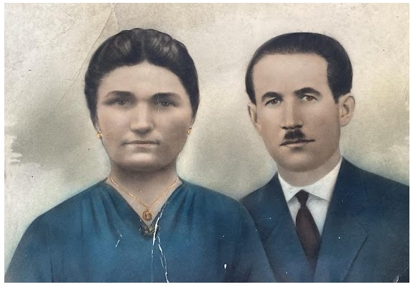

Josip Jurin bio je oženjen Anicom rođ. Dragun (1911.–1989.). Imali su osmero djece: sinove Ivana (1933.–2025.), Milana (1942.–2003.) i Martina (1946.–1947.) te kćeri Slavu (1935.–1977.), Maru (1936.–2012.), Nedu (1939.–2025.), Matiju (1940.–) i Zlatu (1944.–1945.).
Šifre osoba: Anica Dragun (3.1.1.2.4.1-SP-1) | Ivan Josipov (3.1.1.2.4.1.1) | Milan Josipov (3.1.1.2.4.1.2) | Martin Josipov (3.1.1.2.4.1-S1) | Slava Josipova (3.1.1.2.4.1-K2) | Mara Josipova (3.1.1.2.4.1-K3) | Matija Josipova (3.1.1.2.4.1-K4) | Zlata Josipova (3.1.1.2.4.1-K5)
Josip Jurin tragično je ubijen 1946. godine u okolnostima koje do danas nisu službeno razjašnjene. Prema svjedočenju očevidca događaja, Marijana Budimira (Mijana), koji je pred svoju smrt iznio iskaz Josipovoj supruzi Anici rođ. Dragun, ubojstvo je počinio Josipov prvi susjed, djelujući po nagovoru i instrukcijama vlastitog brata. Motiv je, prema tom svjedočenju, bila materijalna korist, jer je Josip u to vrijeme radio kao trgovac u zadruzi i imao pristup robi i zalihama koje su u poratnom razdoblju bile od velike vrijednosti.
U godinama nakon rata u javnosti se proširila službena verzija da su Josipa ubili kamišari u povlačenju. Ta verzija nikada nije bila sudski potvrđena, a cijeli je slučaj — zbog poratnih prilika, nesređenih društvenih odnosa i namjernog manipuliranja informacijama — ostao neistražen i neprocesuiran. Ovdje se događaj prikazuje isključivo kao obiteljsko svjedočenje i povijesno iskustvo njegovih potomaka, a ne kao sudski utvrđena činjenica.
Josipova smrt i dugogodišnja neizvjesnost oko njezinih stvarnih okolnosti snažno su obilježile život njegove supruge, djece i kasnijih generacija. Posebno je teško bilo prihvatiti činjenicu da je čovjek koji je organizirao ubojstvo kasnije, tijekom života, na različite načine pomagao Josipovoj obitelji, što je kod Josipova sina Ivana — moga oca — stvorilo duboku unutarnju borbu i nemogućnost da povjeruje u svjedočenje očevidca.
Napomena autora
Zbog proturječnih i manipulativnih javnih prikaza, naša je obitelj desetljećima bila izložena neugodnim etiketama koje nisu odgovarale onome što smo doznali iz vlastitog obiteljskog svjedočenja. Tvrdnja da je Josip bio žrtva kamišara poslužila je tadašnjim predstavnicima vlasti kao osnova da mu se podigne spomenik i da se njegova smrt uključi u službena obilježavanja obljetnica bivše države. Time se među ljudima stvorio netočan dojam da je naša obitelj bila ideološki opredijeljena, što nije odgovaralo stvarnosti: u to vrijeme u narodu nije postojala izgrađena svijest o ideologiji, nego su nositelji domaćinstava nastojali prehraniti mnogobrojnu obitelj u iznimno teškim okolnostima.
Ovu napomenu navodim kako bih jasno odvojio službene, naknadno oblikovane prikaze od obiteljskog svjedočenja. Njezina svrha nije optuživanje današnjih potomaka niti stvaranje neprijateljstva; između obitelji nema zle krvi, a odnosi se temelje na međusobnom poštovanju i razumijevanju.
3.1.1.2.4.1.1. Ivan Josipov (1933.–2025.)
Fotografije i dokumenti Ivana Josipova
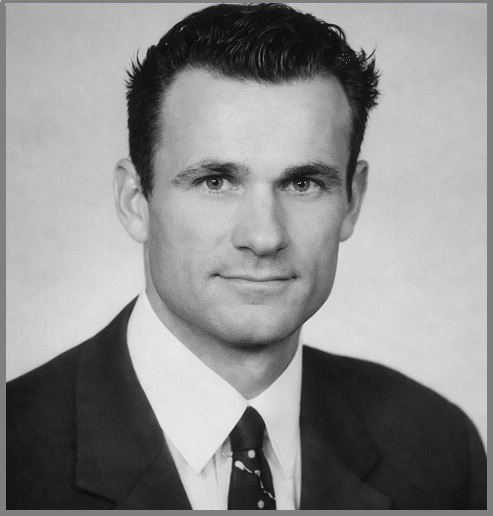
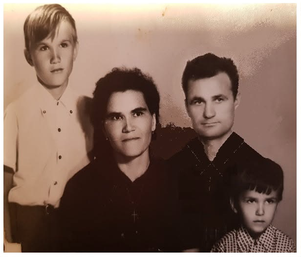
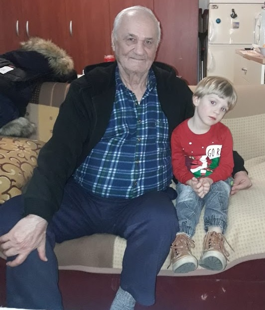
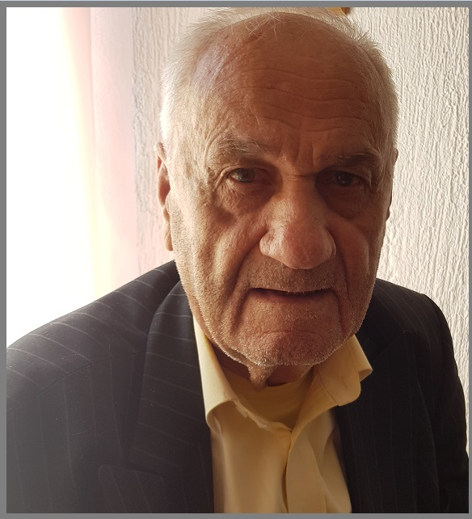
Ivan Josipov ženio se dvaput. U prvom braku s Matijom rođ. Pušić (G.N.) dobio je troje djece: sina Juru (1956.–), još jednog sina čiji su podaci zaštićeni te kćer Mihaelu, krštenu kao Milena (1959.–). U drugom braku s Verkom rođ. Nikolovski (G.N.) nije imao djece. Obitelj živi u Zagrebu.
Šifre osoba: Matija Pušić (3.1.1.2.4.1.1-SP-1) | Verka rođ. Nikolovski (3.1.1.2.4.1.1-SP-2) | Jure Ivanov (3.1.1.2.4.1.1.1) | 3.1.1.2.4.1.1.2 — Podaci o ovoj osobi su zaštićeni i dostupni samo odobrenim korisnicima privatnog arhiva. | Mihaela Ivanova (3.1.1.2.4.1.1-K1)
3.1.1.2.4.1.1.1. Jure Ivanov (1956.–)
Fotografije Jure Ivanova

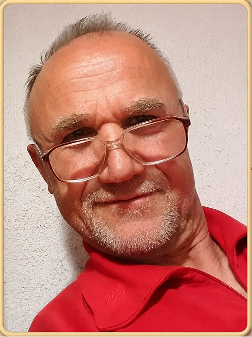

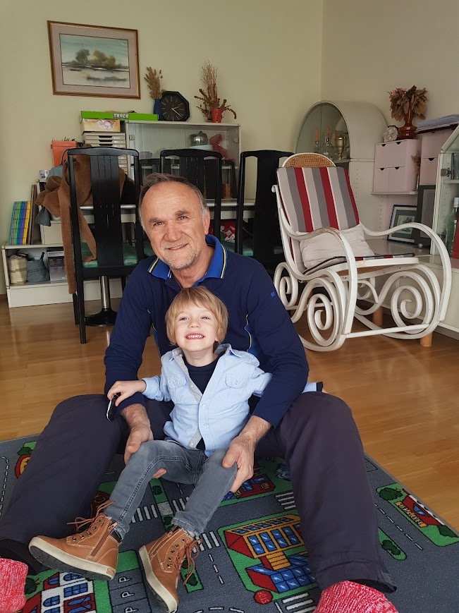
Jure Ivanov oženjen je Ružom rođ. Kosić (G.N.). Njihova djeca su sinovi Ivica Julio (1981.–) i Marin Tin (1983.–). Obitelj živi u Zagrebu.
Šifre osoba: Ruža rođ. Kosić (3.1.1.2.4.1.1.1-SP-1) | Ivica Julio Jurin (3.1.1.2.4.1.1.1.1) | Marin Tin Jurin (3.1.1.2.4.1.1.1.2)
3.1.1.2.4.1.1.1.1. Ivica Julio Jurin (1981.–)
Fotografije Ivice Julia Jurina
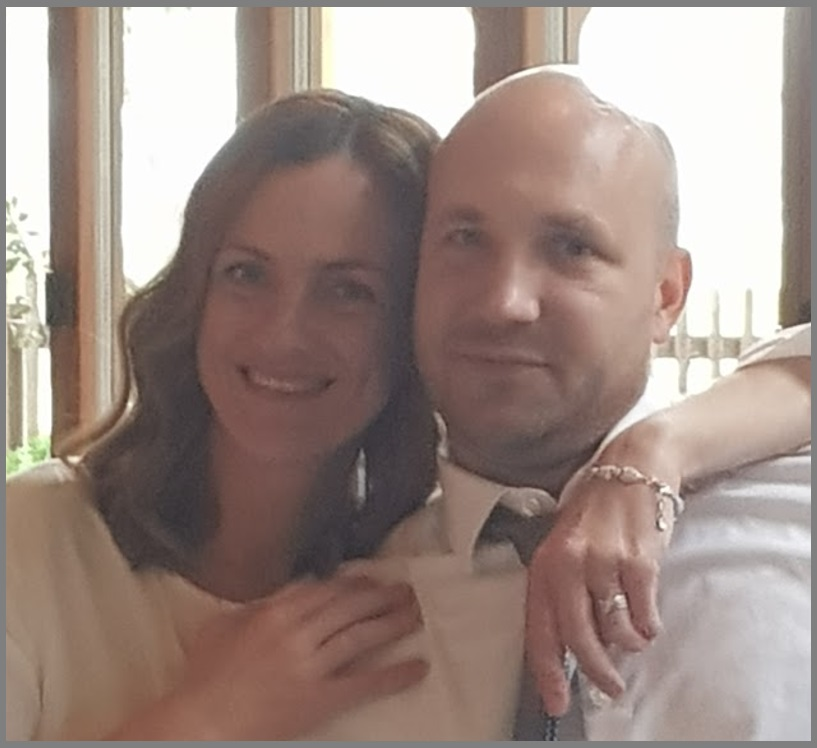
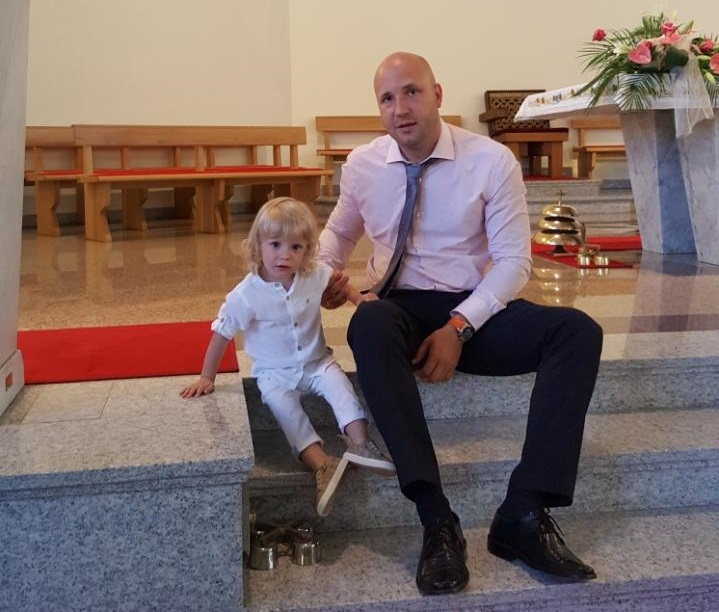
Ivica Julio Jurin oženjen je Anom rođ. Mikuš (G.N.). Njihova djeca su sin Vigo Ivičin (2015.–) i kći Kaia Ivičina (2018.–). Obitelj živi u Zagrebu.
Šifre osoba: Ana rođ. Mikuš (3.1.1.2.4.1.1.1.1-SP-1) | Vigo Ivičin (3.1.1.2.4.1.1.1.1-S1) | Kaia Ivičina (3.1.1.2.4.1.1.1.1-K1)
3.1.1.2.4.1.1.1.2. Marin Tin Jurin (1983.–)
Marin Tin Jurin oženjen je Ivanom rođ. Kereta (G.N.). Njihova djeca su sinovi David Marinov (2017.–) i Jakov Marinov (2019.–) te kći Laura Marinova (2023.–). Obitelj živi u Zagrebu.
Šifre osoba: Ivana rođ. Kereta (3.1.1.2.4.1.1.1.2-SP-1) | David Marinov (3.1.1.2.4.1.1.1.2-S1) | Jakov Marinov (3.1.1.2.4.1.1.1.2-S2) | Laura Marinova (3.1.1.2.4.1.1.1.2-K1)
3.1.1.2.4.1.1.2
Podaci o ovoj osobi su zaštićeni i dostupni samo odobrenim korisnicima privatnog arhiva.
Šifre osoba: 3.1.1.2.4.1.1.2-SP-1 — Podaci o ovoj osobi su zaštićeni i dostupni samo odobrenim korisnicima privatnog arhiva. | Filip Vladimirov (3.1.1.2.4.1.1.2-S1) | Leo Vladimirov (3.1.1.2.4.1.1.2-S2)
3.1.1.2.4.1.2. Milan Josipov (1942.–2003.)
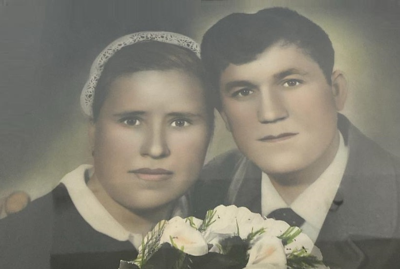
Milan Josipov bio je oženjen Slavkom rođ. Budimir (1935.–2006.). Dobili su petero djece: sinove Jozu (1967.–) i Ivana (1974.–) te kćeri Mariju (1965.–), Anu (1970.–) i Marinu (1973.–). Obitelj živi u Posušju.
Šifre osoba: Slavka rođ. Budimir (3.1.1.2.4.1.2-SP-1) | Jozo Milanov (3.1.1.2.4.1.2.1) | Ivan Milanov (3.1.1.2.4.1.2.2) | Marija Milanova (3.1.1.2.4.1.2-K1) | Anka Milanova (3.1.1.2.4.1.2-K2) | Marina Milanova (3.1.1.2.4.1.2-K3)
3.1.1.2.4.1.2-K2. Anka Milanova (1970.–)
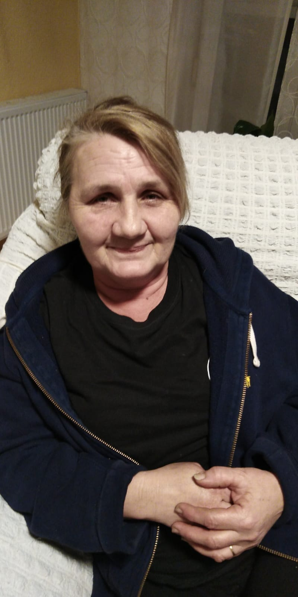
3.1.1.2.4.1.2.1. Jozo Milanov (1967.–)
Jozo je oženjen Vesnom rođ. Matić s kojom ima kćer Slavicu i Mateu te sina Martina. Obitelj živi u posušju
Šifre osoba: Vesna Matić (3.1.1.2.4.1.2.1-SP-1) | Matea Jozina (3.1.1.2.4.1.2.1.1) | Martin Jozin (3.1.1.2.4.1.2.1-S1) | Slavica Jozina (3.1.1.2.4.1.2.1-K1)
3.1.1.2.4.1.2.1.1. Matea Jozina (1999.–)
Podaci o vjerojatno živom članu dostupni su samo odobrenim korisnicima privatnog arhiva.
Šifre osoba: ime nije poznato (3.1.1.2.4.1.2.1.1-SP-1) | Toma Matein (3.1.1.2.4.1.2.1.1.1)
3.1.1.2.4.1.2.2. Ivan Milanov (1974.–)
Fotografije Ivana Milanova
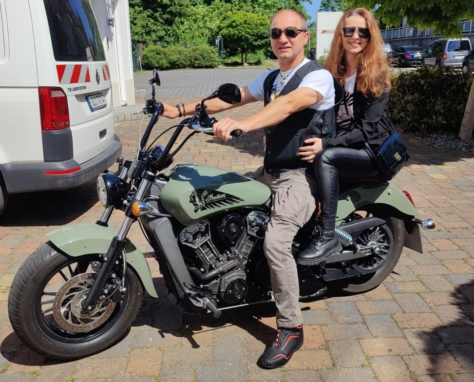
Ivan Milanov je oženjen s Ružicom rođ. Glavaš i s njom ima sinove Davida i Milana i kćer Nataliju. Obitelj živi u Bielefeldu, Njemačka
Šifre osoba: Ružica Glavaš (3.1.1.2.4.1.2.2-SP-1) | David Ivanov (3.1.1.2.4.1.2.2.1) | Milan Ivanov (3.1.1.2.4.1.2.2-S1) | Natalija Ivanova (3.1.1.2.4.1.2.2-K1)
3.1.1.2.4.1.2.2-K1. Natalija Ivanova (2000.–)
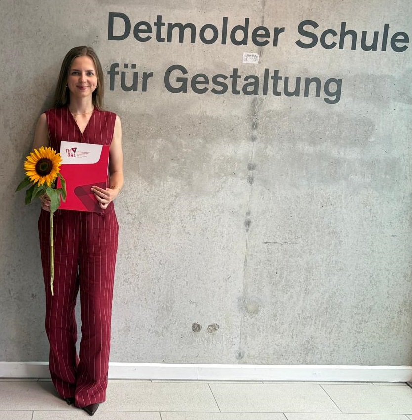
3.1.1.2.4.1.2.2.1. David Ivanov (1995.–)
David je oženjen Lizom rođ. Wörmann i s njom ima kćer Ivanu. Obitelj živi u Bielefeldu u Njemačkoj
Šifre osoba: Liza Wormann (3.1.1.2.4.1.2.2.1-SP-1) | Ivana Davidova (3.1.1.2.4.1.2.2.1-K1)
3.1.2. Mijo Antin (1818.–1878.) – nadimak TUCIĆI
Mijo, drugi Antin sin, oženio je Mandu Martinović. Imali su devetero djece: sinove Jozu, Antu (1852.–), Matu, Miju (1865.–) i Petra te kćeri Ivu (1856.–), Matiju (1858.–), Ružu (1859.–) i Anticu (1861.–). O sinu Miji nema drugih podataka osim rođenja. Potomci preko sinova Joze, Mate i Petra nose nadimak TUCIĆI, koji je nastao jer su članovi obitelji bili skloni ljubavnim avanturama. Podaci o vjerojatno živim članovima obitelji premješteni su u privatni dio arhiva.
Šifre osoba: Manda Martinović (3.1.2-SP-1) | Jozo Mijin (3.1.2.1) | Mate Mijin (3.1.2.2) | Petar Mijin (3.1.2.3) | Ante Mijin (3.1.2-S1) | Mijo Mijin (3.1.2-S2) | Iva Mijina (3.1.2-K1) | Matija Mijina (3.1.2-K2) | Ruža Mijina (3.1.2-K3) | Antica Mijina (3.1.2-K4)
LOZA JOZE MIJINA
3.1.2.1. Jozo Mijin (1851.–)
Jozo se oženio Ivom Bilojelić. Imali su sedmero djece: sinove Antu, Jozu (1884.–) i Nikolu (1889.–1895.), te kćeri Matiju (1880.–), Jelu (1885.–), Maru (1895.–) i Ivu (1898.–). Sin Jozo nije se ženio, a jedino je Ante prenio prezime na potomke.
Šifre osoba: Iva Bilojelić (3.1.2.1-SP-1) | Ante Jozin (3.1.2.1.1) | Jozo Jozin (3.1.2.1-S1) | Nikola Jozin (3.1.2.1-S2) | Matija Jozina (3.1.2.1-K1) | Jela Jozina (3.1.2.1-K2) | Mara Jozina (3.1.2.1-K3) | Iva Jozina (3.1.2.1-K4)
3.1.2.1.1. Ante Jozin (1881.–1942.)
Oženio je Jelu Škorić. Imali su sinove Marijana, Matu (1920.–), Pilipa (1926.–1926.) i Miju te kćeri Jelu (1912.–), Maru (1915.–1915.), Katu (1922.–) i Milu (1925.–). Obiteljsku su lozu nastavili sinovi Marijan i Mijo.
Šifre osoba: Jela Škorić (3.1.2.1.1-SP-1) | Marijan Antin – nadimak Đika (3.1.2.1.1.1) | Mijo Antin (3.1.2.1.1.2) | Mate Antin (3.1.2.1.1-S1) | Filip Antin (3.1.2.1.1-S2) | Nikola Antin (3.1.2.1.1-S3) | Jela Antina (3.1.2.1.1-K1) | Mara Antina (3.1.2.1.1-K2) | Kata Antina (3.1.2.1.1-K3) | Mila Antina (3.1.2.1.1-K4)
3.1.2.1.1.1. Marijan Antin (1908.–2003.) – nadimak ĐIKA
Marijan je oženio Ivu Čorbić i imao potomke. Podaci o vjerojatno živim članovima obitelji nalaze se u privatnom arhivu.
Šifre osoba: Iva Čorbić (3.1.2.1.1.1-SP-1) | Ivan Marijanov (3.1.2.1.1.1.1) | 3.1.2.1.1.1.2 — Podaci o ovoj osobi su zaštićeni i dostupni samo odobrenim korisnicima privatnog arhiva. | 3.1.2.1.1.1-K1 — Podaci o ovoj osobi su zaštićeni i dostupni samo odobrenim korisnicima privatnog arhiva. | 3.1.2.1.1.1-K2 — Podaci o ovoj osobi su zaštićeni i dostupni samo odobrenim korisnicima privatnog arhiva. | 3.1.2.1.1.1-K3 — Podaci o ovoj osobi su zaštićeni i dostupni samo odobrenim korisnicima privatnog arhiva. | 3.1.2.1.1.1-K4 — Podaci o ovoj osobi su zaštićeni i dostupni samo odobrenim korisnicima privatnog arhiva.
3.1.2.1.1.1.1. Ivan Marijanov (1939.–2024.)
Supruga: Ana rođ. Pušić. Ivan Marijanov živio je od 1939. do 2024. godine. Bio je oženjen i imao potomke. Podaci o vjerojatno živim članovima obitelji nalaze se u privatnom arhivu. Obitelj živi u Zagrebu.
Šifre osoba: Ana Pušić (3.1.2.1.1.1.1-SP-1) | Zdenko Ivanov (3.1.2.1.1.1.1.1) | 3.1.2.1.1.1.1-K1 — Podaci o ovoj osobi su zaštićeni i dostupni samo odobrenim korisnicima privatnog arhiva.
3.1.2.1.1.1.1.1. Živi potomak – privatni podaci (G.N.)
Podaci o vjerojatno živom članu dostupni su samo odobrenim korisnicima privatnog arhiva.
Šifre osoba: 3.1.2.1.1.1.1.1-SP-1 — Podaci o ovoj osobi su zaštićeni i dostupni samo odobrenim korisnicima privatnog arhiva. | Kristina rođ. Topić (3.1.2.1.1.1.1.1-SP-2) | Tomislav Zdenkov (3.1.2.1.1.1.1.1-S1) | Ana Zdenkova (3.1.2.1.1.1.1.1-K1)
3.1.2.1.1.1.2
Podaci o ovoj osobi su zaštićeni i dostupni samo odobrenim korisnicima privatnog arhiva.
Šifre osoba: 3.1.2.1.1.1.2-SP-1 — Podaci o ovoj osobi su zaštićeni i dostupni samo odobrenim korisnicima privatnog arhiva. | 3.1.2.1.1.1.2-SP-2 — Podaci o ovoj osobi su zaštićeni i dostupni samo odobrenim korisnicima privatnog arhiva. | 3.1.2.1.1.1.2.1 — Podaci o ovoj osobi su zaštićeni i dostupni samo odobrenim korisnicima privatnog arhiva. | 3.1.2.1.1.1.2-K1 — Podaci o ovoj osobi su zaštićeni i dostupni samo odobrenim korisnicima privatnog arhiva. | 3.1.2.1.1.1.2-K2 — Podaci o ovoj osobi su zaštićeni i dostupni samo odobrenim korisnicima privatnog arhiva. | 3.1.2.1.1.1.2-K3 — Podaci o ovoj osobi su zaštićeni i dostupni samo odobrenim korisnicima privatnog arhiva.
3.1.2.1.1.1.2.1
Podaci o ovoj osobi su zaštićeni i dostupni samo odobrenim korisnicima privatnog arhiva.
Šifre osoba: 3.1.2.1.1.1.2.1-SP-1 — Podaci o ovoj osobi su zaštićeni i dostupni samo odobrenim korisnicima privatnog arhiva. | 3.1.2.1.1.1.2.1-K1 — Podaci o ovoj osobi su zaštićeni i dostupni samo odobrenim korisnicima privatnog arhiva. | 3.1.2.1.1.1.2.1-K2 — Podaci o ovoj osobi su zaštićeni i dostupni samo odobrenim korisnicima privatnog arhiva.
3.1.2.1.1.2. Mijo Antin (1927.–)
Supruga: Maša rođ. Gudelj. Povijesni podatak o ovoj osobi ostaje javno dostupan. Podaci o vjerojatno živim članovima obitelji premješteni su u privatni dio arhiva. Obitelj živi u Zagrebu.
Šifre osoba: Maša Gudelj (3.1.2.1.1.2-SP-1) | 3.1.2.1.1.2.1 — Podaci o ovoj osobi su zaštićeni i dostupni samo odobrenim korisnicima privatnog arhiva.
3.1.2.1.1.2.1
Podaci o ovoj osobi su zaštićeni i dostupni samo odobrenim korisnicima privatnog arhiva.
Šifre osoba: 3.1.2.1.1.2.1-SP-1 — Podaci o ovoj osobi su zaštićeni i dostupni samo odobrenim korisnicima privatnog arhiva. | 3.1.2.1.1.2.1.1 — Podaci o ovoj osobi su zaštićeni i dostupni samo odobrenim korisnicima privatnog arhiva.
3.1.2.1.1.2.1.1
Podaci o ovoj osobi su zaštićeni i dostupni samo odobrenim korisnicima privatnog arhiva.
Šifre osoba: 3.1.2.1.1.2.1.1-SP-1 — Podaci o ovoj osobi su zaštićeni i dostupni samo odobrenim korisnicima privatnog arhiva. | 3.1.2.1.1.2.1.1-S1 — Podaci o ovoj osobi su zaštićeni i dostupni samo odobrenim korisnicima privatnog arhiva. | 3.1.2.1.1.2.1.1-S2 — Podaci o ovoj osobi su zaštićeni i dostupni samo odobrenim korisnicima privatnog arhiva.
LOZA MATE MIJINA
3.1.2.2. Mate Mijin (1864.–1905.)
Mate se ženio dva puta. U prvom braku s Tomicom Kovač imao je sina Ivana (1888.–1895.). U drugom braku s Ivom Vlajčić imao je kćer Ivu (1897.–1914.) i sinove Martina (–1927.) i Juru. Nema podataka o tome je li se Martin ženio.
Šifre osoba: Tomica Kovač (3.1.2.2-SP-1) | Iva rođ. Vlajčić (3.1.2.2-SP-2) | Jure Matin – nadimak ĐUKA (3.1.2.2.1) | Ivan Matin (3.1.2.2-S1) | Martin Matin (3.1.2.2-S2) | Iva Matina (3.1.2.2-K1)
3.1.2.2.1. Jure Matin (1905.–1974.) – nadimak ĐUKA
Jure je oženio Matiju Škorić i imao potomke. Podaci o vjerojatno živim članovima obitelji nalaze se u privatnom arhivu.
Šifre osoba: Matija Škorić (3.1.2.2.1-SP-1) | Ante Jurin (3.1.2.2.1.1) | 3.1.2.2.1.2 — Podaci o ovoj osobi su zaštićeni i dostupni samo odobrenim korisnicima privatnog arhiva. | Mila Jurina (3.1.2.2.1-K1) | Stana Jurina (3.1.2.2.1-K2) | 3.1.2.2.1-K3 — Podaci o ovoj osobi su zaštićeni i dostupni samo odobrenim korisnicima privatnog arhiva.
3.1.2.2.1.1. Ante Jurin (1933.–1999.)
Supruga: Mila rođ. Đikić. Ante je bio oženjen i imao potomke. Njegov sin Ivan živio je od 1957. do 2002. godine. Obitelj se preselila u Đakovo. Podaci o vjerojatno živim članovima obitelji nalaze se u privatnom arhivu.
Šifre osoba: Mila Đikić (3.1.2.2.1.1-SP-1) | Milan Antin (3.1.2.2.1.1.1) | 3.1.2.2.1.1.2 — Podaci o ovoj osobi su zaštićeni i dostupni samo odobrenim korisnicima privatnog arhiva. | Ivan Antin (3.1.2.2.1.1-S1) | 3.1.2.2.1.1-K1 — Podaci o ovoj osobi su zaštićeni i dostupni samo odobrenim korisnicima privatnog arhiva.
3.1.2.2.1.1.1. Milan Antin (1958.–1995.)
Supruga: Marijana rođ. Erceg. Milan Antin živio je od 1958. do 1995. godine. Bio je oženjen i imao potomke. Podaci o vjerojatno živim članovima obitelji nalaze se u privatnom arhivu. Obitelj živi u Đakovu.
Šifre osoba: Marijana Erceg (3.1.2.2.1.1.1-SP-1) | 3.1.2.2.1.1.1.1 — Podaci o ovoj osobi su zaštićeni i dostupni samo odobrenim korisnicima privatnog arhiva. | 3.1.2.2.1.1.1.2 — Podaci o ovoj osobi su zaštićeni i dostupni samo odobrenim korisnicima privatnog arhiva.
3.1.2.2.1.1.1.1
Podaci o ovoj osobi su zaštićeni i dostupni samo odobrenim korisnicima privatnog arhiva.
Šifre osoba: 3.1.2.2.1.1.1.1-SP-1 — Podaci o ovoj osobi su zaštićeni i dostupni samo odobrenim korisnicima privatnog arhiva. | 3.1.2.2.1.1.1.1-S1 — Podaci o ovoj osobi su zaštićeni i dostupni samo odobrenim korisnicima privatnog arhiva.
3.1.2.2.1.1.1.2
Podaci o ovoj osobi su zaštićeni i dostupni samo odobrenim korisnicima privatnog arhiva.
Šifre osoba: 3.1.2.2.1.1.1.2-SP-1 — Podaci o ovoj osobi su zaštićeni i dostupni samo odobrenim korisnicima privatnog arhiva. | 3.1.2.2.1.1.1.2-S1 — Podaci o ovoj osobi su zaštićeni i dostupni samo odobrenim korisnicima privatnog arhiva.
3.1.2.2.1.1.2
Podaci o ovoj osobi su zaštićeni i dostupni samo odobrenim korisnicima privatnog arhiva.
Šifre osoba: 3.1.2.2.1.1.2-SP-1 — Podaci o ovoj osobi su zaštićeni i dostupni samo odobrenim korisnicima privatnog arhiva. | 3.1.2.2.1.1.2-S1 — Podaci o ovoj osobi su zaštićeni i dostupni samo odobrenim korisnicima privatnog arhiva. | 3.1.2.2.1.1.2-S2 — Podaci o ovoj osobi su zaštićeni i dostupni samo odobrenim korisnicima privatnog arhiva.
3.1.2.2.1.2
Podaci o ovoj osobi su zaštićeni i dostupni samo odobrenim korisnicima privatnog arhiva.
Šifre osoba: 3.1.2.2.1.2-SP-1 — Podaci o ovoj osobi su zaštićeni i dostupni samo odobrenim korisnicima privatnog arhiva. | 3.1.2.2.1.2.1 — Podaci o ovoj osobi su zaštićeni i dostupni samo odobrenim korisnicima privatnog arhiva. | 3.1.2.2.1.2-K1 — Podaci o ovoj osobi su zaštićeni i dostupni samo odobrenim korisnicima privatnog arhiva. | 3.1.2.2.1.2-K2 — Podaci o ovoj osobi su zaštićeni i dostupni samo odobrenim korisnicima privatnog arhiva. | 3.1.2.2.1.2-K3 — Podaci o ovoj osobi su zaštićeni i dostupni samo odobrenim korisnicima privatnog arhiva.
3.1.2.2.1.2.1
Podaci o ovoj osobi su zaštićeni i dostupni samo odobrenim korisnicima privatnog arhiva.
Šifre osoba: 3.1.2.2.1.2.1-SP-1 — Podaci o ovoj osobi su zaštićeni i dostupni samo odobrenim korisnicima privatnog arhiva. | 3.1.2.2.1.2.1-S1 — Podaci o ovoj osobi su zaštićeni i dostupni samo odobrenim korisnicima privatnog arhiva. | 3.1.2.2.1.2.1-K1 — Podaci o ovoj osobi su zaštićeni i dostupni samo odobrenim korisnicima privatnog arhiva.
LOZA PETRA MIJINA
3.1.2.3. Petar Mijin (1867.–)
Petar je bio oženjen Matijom Tandara s kojom je dobio sinove Matu, Stipana, Antu (1911.–1911.) i Iliju te kćer Anđu (1911.–1911.).
Šifre osoba: Matija Tandara (3.1.2.3-SP-1) | Mate Petrov (3.1.2.3.1) | Stipan Petrov (3.1.2.3.2) | Ilija Petrov – nadimak GRABUNJAŠ (3.1.2.3.3) | Ante Petrov (3.1.2.3-S1) | Anđa Petrova (3.1.2.3-K1)
3.1.2.3.1. Mate Petrov (1902.–1991.)
Mate je bio oženjen Katom Cimerman i imao potomke. Obitelj se preselila u Kutjevo. Podaci o vjerojatno živim članovima obitelji nalaze se u privatnom arhivu.
Šifre osoba: Kata Cimerman (3.1.2.3.1-SP-1) | Ivan Matin (3.1.2.3.1.1) | 3.1.2.3.1-K1 — Podaci o ovoj osobi su zaštićeni i dostupni samo odobrenim korisnicima privatnog arhiva.
3.1.2.3.1.1. Ivan Matin (1932.–2005.)
Supruga: Pavica rođ. Kralik. Ivan Matin živio je od 1932. do 2005. godine. Bio je oženjen i imao potomke. Podaci o vjerojatno živim članovima obitelji nalaze se u privatnom arhivu. Obitelj živi u Kutjevu.
Šifre osoba: Pavica Kralik (3.1.2.3.1.1-SP-1) | 3.1.2.3.1.1.1 — Podaci o ovoj osobi su zaštićeni i dostupni samo odobrenim korisnicima privatnog arhiva. | 3.1.2.3.1.1-S1 — Podaci o ovoj osobi su zaštićeni i dostupni samo odobrenim korisnicima privatnog arhiva.
3.1.2.3.1.1.1
Podaci o ovoj osobi su zaštićeni i dostupni samo odobrenim korisnicima privatnog arhiva.
Šifre osoba: 3.1.2.3.1.1.1-SP-1 — Podaci o ovoj osobi su zaštićeni i dostupni samo odobrenim korisnicima privatnog arhiva. | 3.1.2.3.1.1.1-K1 — Podaci o ovoj osobi su zaštićeni i dostupni samo odobrenim korisnicima privatnog arhiva. | 3.1.2.3.1.1.1-K2 — Podaci o ovoj osobi su zaštićeni i dostupni samo odobrenim korisnicima privatnog arhiva.
3.1.2.3.2. Stipan Petrov (1908.–1989.)
Stipan je bio oženjen Jozom Malenica. Obitelj se preselila u Dugo Selo. Podaci o vjerojatno živim članovima obitelji nalaze se u privatnom arhivu.
Šifre osoba: Joza Malenica (3.1.2.3.2-SP-1) | 3.1.2.3.2.1 — Podaci o ovoj osobi su zaštićeni i dostupni samo odobrenim korisnicima privatnog arhiva. | 3.1.2.3.2-K1 — Podaci o ovoj osobi su zaštićeni i dostupni samo odobrenim korisnicima privatnog arhiva.
3.1.2.3.2.1
Podaci o ovoj osobi su zaštićeni i dostupni samo odobrenim korisnicima privatnog arhiva.
Šifre osoba: 3.1.2.3.2.1-SP-1 — Podaci o ovoj osobi su zaštićeni i dostupni samo odobrenim korisnicima privatnog arhiva. | 3.1.2.3.2.1.1 — Podaci o ovoj osobi su zaštićeni i dostupni samo odobrenim korisnicima privatnog arhiva. | 3.1.2.3.2.1-K1 — Podaci o ovoj osobi su zaštićeni i dostupni samo odobrenim korisnicima privatnog arhiva. | 3.1.2.3.2.1-K2 — Podaci o ovoj osobi su zaštićeni i dostupni samo odobrenim korisnicima privatnog arhiva. | 3.1.2.3.2.1-K3 — Podaci o ovoj osobi su zaštićeni i dostupni samo odobrenim korisnicima privatnog arhiva.
3.1.2.3.2.1.1
Podaci o ovoj osobi su zaštićeni i dostupni samo odobrenim korisnicima privatnog arhiva.
Šifre osoba: 3.1.2.3.2.1.1-SP-1 — Podaci o ovoj osobi su zaštićeni i dostupni samo odobrenim korisnicima privatnog arhiva. | 3.1.2.3.2.1.1-S1 — Podaci o ovoj osobi su zaštićeni i dostupni samo odobrenim korisnicima privatnog arhiva. | 3.1.2.3.2.1.1-S2 — Podaci o ovoj osobi su zaštićeni i dostupni samo odobrenim korisnicima privatnog arhiva. | 3.1.2.3.2.1.1-K1 — Podaci o ovoj osobi su zaštićeni i dostupni samo odobrenim korisnicima privatnog arhiva.
3.1.2.3.3. Ilija Petrov (1912.–2006.) – nadimak GRABUNJAŠ
Ilija je bio oženjen Anicom Škorić i imao potomke. Podaci o vjerojatno živim članovima obitelji nalaze se u privatnom arhivu.
Šifre osoba: Anica Škorić (3.1.2.3.3-SP-1) | 3.1.2.3.3.1 — Podaci o ovoj osobi su zaštićeni i dostupni samo odobrenim korisnicima privatnog arhiva. | Mirko Ilijin (3.1.2.3.3.2) | 3.1.2.3.3-K1 — Podaci o ovoj osobi su zaštićeni i dostupni samo odobrenim korisnicima privatnog arhiva. | 3.1.2.3.3-K2 — Podaci o ovoj osobi su zaštićeni i dostupni samo odobrenim korisnicima privatnog arhiva. | 3.1.2.3.3-K3 — Podaci o ovoj osobi su zaštićeni i dostupni samo odobrenim korisnicima privatnog arhiva.
3.1.2.3.3.1
Podaci o ovoj osobi su zaštićeni i dostupni samo odobrenim korisnicima privatnog arhiva.
Šifre osoba: 3.1.2.3.3.1-SP-1 — Podaci o ovoj osobi su zaštićeni i dostupni samo odobrenim korisnicima privatnog arhiva. | Nediljk Marijanov (3.1.2.3.3.1-S1) | 3.1.2.3.3.1-S2 — Podaci o ovoj osobi su zaštićeni i dostupni samo odobrenim korisnicima privatnog arhiva. | 3.1.2.3.3.1-K1 — Podaci o ovoj osobi su zaštićeni i dostupni samo odobrenim korisnicima privatnog arhiva. | 3.1.2.3.3.1-K2 — Podaci o ovoj osobi su zaštićeni i dostupni samo odobrenim korisnicima privatnog arhiva. | 3.1.2.3.3.1-K3 — Podaci o ovoj osobi su zaštićeni i dostupni samo odobrenim korisnicima privatnog arhiva.
3.1.2.3.3.2. Mirko Ilijin (1945.–2025.)
Supruga: Kata rođ. Kovač. Mirko Ilijin živio je od 1945. do 2025. godine. Bio je oženjen i imao potomke. Podaci o vjerojatno živim članovima obitelji nalaze se u privatnom arhivu. Obitelj živi u Zagrebu.
Šifre osoba: Kata Kovač (3.1.2.3.3.2-SP-1) | 3.1.2.3.3.2.1 — Podaci o ovoj osobi su zaštićeni i dostupni samo odobrenim korisnicima privatnog arhiva. | 3.1.2.3.3.2.2 — Podaci o ovoj osobi su zaštićeni i dostupni samo odobrenim korisnicima privatnog arhiva. | Ante Mirkov (3.1.2.3.3.2.3) | 3.1.2.3.3.2-K1 — Podaci o ovoj osobi su zaštićeni i dostupni samo odobrenim korisnicima privatnog arhiva. | 3.1.2.3.3.2-K2 — Podaci o ovoj osobi su zaštićeni i dostupni samo odobrenim korisnicima privatnog arhiva.
3.1.2.3.3.2.1
Podaci o ovoj osobi su zaštićeni i dostupni samo odobrenim korisnicima privatnog arhiva.
Šifre osoba: 3.1.2.3.3.2.1-SP-1 — Podaci o ovoj osobi su zaštićeni i dostupni samo odobrenim korisnicima privatnog arhiva. | 3.1.2.3.3.2.1-S1 — Podaci o ovoj osobi su zaštićeni i dostupni samo odobrenim korisnicima privatnog arhiva. | 3.1.2.3.3.2.1-K1 — Podaci o ovoj osobi su zaštićeni i dostupni samo odobrenim korisnicima privatnog arhiva. | 3.1.2.3.3.2.1-K2 — Podaci o ovoj osobi su zaštićeni i dostupni samo odobrenim korisnicima privatnog arhiva.
3.1.2.3.3.2.2
Podaci o ovoj osobi su zaštićeni i dostupni samo odobrenim korisnicima privatnog arhiva.
Šifre osoba: 3.1.2.3.3.2.2-SP-1 — Podaci o ovoj osobi su zaštićeni i dostupni samo odobrenim korisnicima privatnog arhiva. | 3.1.2.3.3.2.2-K1 — Podaci o ovoj osobi su zaštićeni i dostupni samo odobrenim korisnicima privatnog arhiva. | 3.1.2.3.3.2.2-K2 — Podaci o ovoj osobi su zaštićeni i dostupni samo odobrenim korisnicima privatnog arhiva.
3.1.2.3.3.2.3. Ante Mirkov (1967.–)
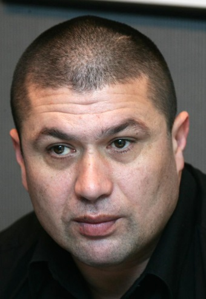
Ante Mirkov oženjen je i ima troje djece. Podaci o njegovoj supruzi i djeci zaštićeni su i dostupni samo odobrenim korisnicima privatnog arhiva. Ante je predsjednik HVIDR-e Grada Zagreba.
Šifre osoba: 3.1.2.3.3.2.3-SP-1 — Podaci o ovoj osobi su zaštićeni i dostupni samo odobrenim korisnicima privatnog arhiva. | 3.1.2.3.3.2.3-K1 — Podaci o ovoj osobi su zaštićeni i dostupni samo odobrenim korisnicima privatnog arhiva. | 3.1.2.3.3.2.3-K2 — Podaci o ovoj osobi su zaštićeni i dostupni samo odobrenim korisnicima privatnog arhiva. | 3.1.2.3.3.2.3-K3 — Podaci o ovoj osobi su zaštićeni i dostupni samo odobrenim korisnicima privatnog arhiva.
DRUGA PODGRANA FILIPA ANTINA
3.2. Filip Antin (G.N.)
Filip je bio drugi sin Ante Ivanova. Za razliku od njegova brata Ante, Filip je ostao i nastavio život u Ričicama. Bio je oženjen Matijom Parlov, s kojom je imao sinove Martina, Matu (1814.–) i Ivana (1823.–), te kćeri Jozu, Jelu, Jurku (1811.–), Anticu i Ružu (1821.–1822.). Za Ivana i Matu postoje samo podaci o rođenju, pa se pretpostavlja da su mladi umrli ili su odselili iz Ričica.
Šifre osoba: Matija Parlov (3.2-SP-1) | Martin Filipov (3.2.1) | Mate Filipov (3.2-S1) | Ivan Filipov (3.2-S2) | Joza Filipova (3.2-K1) | Jela Filipova (3.2-K2) | Jurka Filipova (3.2-K3) | Antica Filipova (3.2-K4) | Ruža Filipova (3.2-K5)
3.2.1. Martin Filipov (1811.–)
Martin je bio oženjen Mandom Manenica, s kojom je imao sinove Jerku, Iliju, Ivana (1847.–1851.), Martina (–1853.) i još jednog Ivana (1852.–), te kćeri Tomicu (–1870.), Luciju (1845.–), drugu Luciju (1850.–) i Ivu (1854.–). Lozu su nastavili samo sinovi Jerko i Ilija.
Šifre osoba: Manda Manenica (3.2.1-SP-1) | Jerko Martinov (3.2.1.1) | Ilija Martinov (3.2.1.2) | Ivan Martinov (3.2.1-S1) | Martin Martinov (3.2.1-S2) | Drugi Ivan Martinov (3.2.1-S3) | Tomica Martinova (3.2.1-K1) | Lucija Martinova (3.2.1-K2) | Druga Lucija Martinova (3.2.1-K3) | Iva Martinova (3.2.1-K4)
LOZA JERKA MARTINOVA
3.2.1.1. Jerko Martinov (1839.–)
Jerko je bio oženjen Ivom Topalušić s kojom je dobio sinove Martina, Luku (1869.–1869.) i Ivana (1872.–).
Šifre osoba: Iva Topalušić (3.2.1.1-SP-1) | Martin Jerkin (3.2.1.1.1) | Ivan Jerkin (3.2.1.1.2) | Luka Jerkin (3.2.1.1-S1)
3.2.1.1.1. Martin Jerkin (1865.–)
Martin je bio oženjen Ivom Kovač s kojom je imao kćeri Matiju (1893.–), Maru (1895.–1899.) i Ivu (1905.–).
Šifre osoba: Iva Kovač (3.2.1.1.1-SP-1) | Matija Martinova (3.2.1.1.1-K1) | Mara Martinova (3.2.1.1.1-K2) | Iva Martinova (3.2.1.1.1-K3)
3.2.1.1.2. Ivan Jerkin (1872.–)
Ivan je bio oženjen Jakom Martinović s kojom je imao sinove Matu i Martina te kćeri Anu (1900.–), Tomicu (1907.–1908.) i drugu Tomicu (1910.–), nakon što je prva kćer Tomica preminula u drugoj godini života. Često se događalo da roditelji, nakon smrti prvog djeteta, sljedećem djetetu istog spola daju isto ime.
Šifre osoba: Jaka Martinović (3.2.1.1.2-SP-1) | Mate Ivanov – nadimak Pikići (3.2.1.1.2.1) | Martin Ivanov (3.2.1.1.2.2) | Ana Ivanova (3.2.1.1.2-K1) | Tomica Ivanova (3.2.1.1.2-K2) | Druga Tomica Ivanova (3.2.1.1.2-K3)
3.2.1.1.2.1. Mate Ivanov (1898.–) – nadimak PIKIĆI
Supruga: Matija rođ. Lažeta. Povijesni podatak o ovoj osobi ostaje javno dostupan. Podaci o vjerojatno živim članovima obitelji premješteni su u privatni dio arhiva. Obitelj se preselila u Split.
Šifre osoba: Matija Lažeta (3.2.1.1.2.1-SP-1) | Nikola Matin (3.2.1.1.2.1.1) | Mirko Matin (3.2.1.1.2.1.2) | 3.2.1.1.2.1.3 — Podaci o ovoj osobi su zaštićeni i dostupni samo odobrenim korisnicima privatnog arhiva. | Milica Matina (3.2.1.1.2.1-K1) | 3.2.1.1.2.1-K2 — Podaci o ovoj osobi su zaštićeni i dostupni samo odobrenim korisnicima privatnog arhiva.
3.2.1.1.2.1.1. Nikola Matin (1927.–1990.)
Supruga: Matija rođ. Kilić. Nikola Matin živio je od 1927. do 1990. godine. Bio je oženjen i imao potomke. Podaci o vjerojatno živim članovima obitelji nalaze se u privatnom arhivu. Obitelj živi u Splitu.
Šifre osoba: Matija Kilić (3.2.1.1.2.1.1-SP-1) | 3.2.1.1.2.1.1.1 — Podaci o ovoj osobi su zaštićeni i dostupni samo odobrenim korisnicima privatnog arhiva. | 3.2.1.1.2.1.1.2 — Podaci o ovoj osobi su zaštićeni i dostupni samo odobrenim korisnicima privatnog arhiva. | Vera Nikolina (3.2.1.1.2.1.1-K1) | Marija Nikolina (3.2.1.1.2.1.1-K2)
3.2.1.1.2.1.1.1
Podaci o ovoj osobi su zaštićeni i dostupni samo odobrenim korisnicima privatnog arhiva.
Šifre osoba: 3.2.1.1.2.1.1.1-SP-1 — Podaci o ovoj osobi su zaštićeni i dostupni samo odobrenim korisnicima privatnog arhiva. | 3.2.1.1.2.1.1.1-SP-2 — Podaci o ovoj osobi su zaštićeni i dostupni samo odobrenim korisnicima privatnog arhiva. | 3.2.1.1.2.1.1.1-S1 — Podaci o ovoj osobi su zaštićeni i dostupni samo odobrenim korisnicima privatnog arhiva. | 3.2.1.1.2.1.1.1-S2 — Podaci o ovoj osobi su zaštićeni i dostupni samo odobrenim korisnicima privatnog arhiva. | 3.2.1.1.2.1.1.1-K1 — Podaci o ovoj osobi su zaštićeni i dostupni samo odobrenim korisnicima privatnog arhiva. | 3.2.1.1.2.1.1.1-K2 — Podaci o ovoj osobi su zaštićeni i dostupni samo odobrenim korisnicima privatnog arhiva.
3.2.1.1.2.1.1.2
Podaci o ovoj osobi su zaštićeni i dostupni samo odobrenim korisnicima privatnog arhiva.
Šifre osoba: 3.2.1.1.2.1.1.2-SP-1 — Podaci o ovoj osobi su zaštićeni i dostupni samo odobrenim korisnicima privatnog arhiva. | 3.2.1.1.2.1.1.2-S1 — Podaci o ovoj osobi su zaštićeni i dostupni samo odobrenim korisnicima privatnog arhiva. | 3.2.1.1.2.1.1.2-S2 — Podaci o ovoj osobi su zaštićeni i dostupni samo odobrenim korisnicima privatnog arhiva.
3.2.1.1.2.1.2. Mirko Matin (1932.–2005.)
Supruga: Anđelka Dragica rođ. Mršić. Mirko Matin živio je od 1932. do 2005. godine. Bio je oženjen i imao potomke. Podaci o vjerojatno živim članovima obitelji nalaze se u privatnom arhivu. Obitelj živi u Splitu.
Šifre osoba: Anđelka Dragicom Mršić (3.2.1.1.2.1.2-SP-1) | 3.2.1.1.2.1.2.1 — Podaci o ovoj osobi su zaštićeni i dostupni samo odobrenim korisnicima privatnog arhiva. | 3.2.1.1.2.1.2.2 — Podaci o ovoj osobi su zaštićeni i dostupni samo odobrenim korisnicima privatnog arhiva. | 3.2.1.1.2.1.2.3 — Podaci o ovoj osobi su zaštićeni i dostupni samo odobrenim korisnicima privatnog arhiva.
3.2.1.1.2.1.2.1
Podaci o ovoj osobi su zaštićeni i dostupni samo odobrenim korisnicima privatnog arhiva.
Šifre osoba: 3.2.1.1.2.1.2.1-SP-1 — Podaci o ovoj osobi su zaštićeni i dostupni samo odobrenim korisnicima privatnog arhiva. | 3.2.1.1.2.1.2.1-S1 — Podaci o ovoj osobi su zaštićeni i dostupni samo odobrenim korisnicima privatnog arhiva. | 3.2.1.1.2.1.2.1-S2 — Podaci o ovoj osobi su zaštićeni i dostupni samo odobrenim korisnicima privatnog arhiva. | 3.2.1.1.2.1.2.1-S3 — Podaci o ovoj osobi su zaštićeni i dostupni samo odobrenim korisnicima privatnog arhiva.
3.2.1.1.2.1.2.2
Podaci o ovoj osobi su zaštićeni i dostupni samo odobrenim korisnicima privatnog arhiva.
Šifre osoba: 3.2.1.1.2.1.2.2-SP-1 — Podaci o ovoj osobi su zaštićeni i dostupni samo odobrenim korisnicima privatnog arhiva. | 3.2.1.1.2.1.2.2-S1 — Podaci o ovoj osobi su zaštićeni i dostupni samo odobrenim korisnicima privatnog arhiva. | 3.2.1.1.2.1.2.2-S2 — Podaci o ovoj osobi su zaštićeni i dostupni samo odobrenim korisnicima privatnog arhiva.
3.2.1.1.2.1.2.3
Podaci o ovoj osobi su zaštićeni i dostupni samo odobrenim korisnicima privatnog arhiva.
Šifre osoba: 3.2.1.1.2.1.2.3-SP-1 — Podaci o ovoj osobi su zaštićeni i dostupni samo odobrenim korisnicima privatnog arhiva. | 3.2.1.1.2.1.2.3-S1 — Podaci o ovoj osobi su zaštićeni i dostupni samo odobrenim korisnicima privatnog arhiva. | 3.2.1.1.2.1.2.3-K1 — Podaci o ovoj osobi su zaštićeni i dostupni samo odobrenim korisnicima privatnog arhiva. | 3.2.1.1.2.1.2.3-K2 — Podaci o ovoj osobi su zaštićeni i dostupni samo odobrenim korisnicima privatnog arhiva.
3.2.1.1.2.1.3
Podaci o ovoj osobi su zaštićeni i dostupni samo odobrenim korisnicima privatnog arhiva.
Šifre osoba: 3.2.1.1.2.1.3-SP-1 — Podaci o ovoj osobi su zaštićeni i dostupni samo odobrenim korisnicima privatnog arhiva. | 3.2.1.1.2.1.3.1 — Podaci o ovoj osobi su zaštićeni i dostupni samo odobrenim korisnicima privatnog arhiva. | 3.2.1.1.2.1.3-K1 — Podaci o ovoj osobi su zaštićeni i dostupni samo odobrenim korisnicima privatnog arhiva.
3.2.1.1.2.1.3.1
Podaci o ovoj osobi su zaštićeni i dostupni samo odobrenim korisnicima privatnog arhiva.
Šifre osoba: 3.2.1.1.2.1.3.1-SP-1 — Podaci o ovoj osobi su zaštićeni i dostupni samo odobrenim korisnicima privatnog arhiva. | 3.2.1.1.2.1.3.1-S1 — Podaci o ovoj osobi su zaštićeni i dostupni samo odobrenim korisnicima privatnog arhiva. | 3.2.1.1.2.1.3.1-S2 — Podaci o ovoj osobi su zaštićeni i dostupni samo odobrenim korisnicima privatnog arhiva. | 3.2.1.1.2.1.3.1-S3 — Podaci o ovoj osobi su zaštićeni i dostupni samo odobrenim korisnicima privatnog arhiva.
3.2.1.1.2.2. Martin Ivanov (1904.–)
Supruga: Anica rođ. Lekić. Povijesni podatak o ovoj osobi ostaje javno dostupan. Podaci o vjerojatno živim članovima obitelji premješteni su u privatni dio arhiva. Obitelj se preselila u Bjelovar.
Šifre osoba: Anica Lekić (3.2.1.1.2.2-SP-1) | Ivan Martinov (3.2.1.1.2.2.1) | 3.2.1.1.2.2.2 — Podaci o ovoj osobi su zaštićeni i dostupni samo odobrenim korisnicima privatnog arhiva. | Marijan Martinov (3.2.1.1.2.2-S1) | Mara Martinova (3.2.1.1.2.2-K1) | Matija Martinova (3.2.1.1.2.2-K2)
3.2.1.1.2.2.1. Ivan Martinov (1932.–1996.)
Supruga: Ana rođ. Radmanić. Ivan Martinov živio je od 1932. do 1996. godine. Bio je oženjen i imao potomke. Podaci o vjerojatno živim članovima obitelji nalaze se u privatnom arhivu. Obitelj živi u Bjelovaru.
Šifre osoba: Ana Radmanić (3.2.1.1.2.2.1-SP-1) | 3.2.1.1.2.2.1.1 — Podaci o ovoj osobi su zaštićeni i dostupni samo odobrenim korisnicima privatnog arhiva.
3.2.1.1.2.2.1.1
Podaci o ovoj osobi su zaštićeni i dostupni samo odobrenim korisnicima privatnog arhiva.
Šifre osoba: 3.2.1.1.2.2.1.1-SP-1 — Podaci o ovoj osobi su zaštićeni i dostupni samo odobrenim korisnicima privatnog arhiva. | 3.2.1.1.2.2.1.1-S1 — Podaci o ovoj osobi su zaštićeni i dostupni samo odobrenim korisnicima privatnog arhiva. | 3.2.1.1.2.2.1.1-K1 — Podaci o ovoj osobi su zaštićeni i dostupni samo odobrenim korisnicima privatnog arhiva.
3.2.1.1.2.2.2
Podaci o ovoj osobi su zaštićeni i dostupni samo odobrenim korisnicima privatnog arhiva.
Šifre osoba: 3.2.1.1.2.2.2-SP-1 — Podaci o ovoj osobi su zaštićeni i dostupni samo odobrenim korisnicima privatnog arhiva. | 3.2.1.1.2.2.2.1 — Podaci o ovoj osobi su zaštićeni i dostupni samo odobrenim korisnicima privatnog arhiva.
3.2.1.1.2.2.2.1
Podaci o ovoj osobi su zaštićeni i dostupni samo odobrenim korisnicima privatnog arhiva.
Šifre osoba: 3.2.1.1.2.2.2.1-SP-1 — Podaci o ovoj osobi su zaštićeni i dostupni samo odobrenim korisnicima privatnog arhiva. | 3.2.1.1.2.2.2.1-K1 — Podaci o ovoj osobi su zaštićeni i dostupni samo odobrenim korisnicima privatnog arhiva.
LOZA ILIJE MARTINOVA
3.2.1.2. Ilija Martinov (1843.–)
Ilija je bio oženjen Lucom Tavra s kojom je imao sinove Matu, Ivana (1877.–1883.) i Šimuna (1880.–1880.), te kćeri Tomicu (1881.–1882.), drugu Tomicu (1884.–), Ivu (1886.–1886.) i Maru (1887.–1888.). Ivan je preminuo u šestoj godini života, a Šimun ubrzo nakon rođenja.
Šifre osoba: Luca Tavra (3.2.1.2-SP-1) | Mate Ilijin – nadimak RUMIĆI (3.2.1.2.1) | Ivan Ilijin (3.2.1.2-S1) | Šimun Ilijin (3.2.1.2-S2) | Tomica Ilijina (3.2.1.2-K1) | Druga Tomica Ilijina (3.2.1.2-K2) | Iva Ilijina (3.2.1.2-K3) | Mara Ilijina (3.2.1.2-K4)
3.2.1.2.1. Mate Ilijin (1875.–) – nadimak RUMIĆI
Mate je bio oženjen Marom Topalušić, s kojom je imao sinove Ivana (1899.–), Božu (1902.–), Miju i Tomu te kćeri Tomicu (1900.–), Maru (1906.–) i drugu Maru (1912.–). Za Ivana i Božu postoje samo podaci o godini rođenja, a nije poznato jesu li umrli mladi ili su se odselili iz Ričica.
Šifre osoba: Mara Topalušić (3.2.1.2.1-SP-1) | Mijo Matin (3.2.1.2.1.1) | Toma Matin (3.2.1.2.1.2) | Ivan Matin (3.2.1.2.1-S1) | Božu Matin (3.2.1.2.1-S2) | Tomica Matina (3.2.1.2.1-K1) | Mara Matina (3.2.1.2.1-K2) | Druga Mara Matina (3.2.1.2.1-K3)
3.2.1.2.1.1. Mijo Matin (1909.–1945.) – nadimak RUMIĆI
Mijo je bio oženjen Jozom Štrljić i imao potomke. Obitelj se preselila u Predavac kraj Bjelovara. Podaci o vjerojatno živim članovima obitelji nalaze se u privatnom arhivu.
Šifre osoba: Joza Štrljić (3.2.1.2.1.1-SP-1) | 3.2.1.2.1.1.1 — Podaci o ovoj osobi su zaštićeni i dostupni samo odobrenim korisnicima privatnog arhiva. | 3.2.1.2.1.1.2 — Podaci o ovoj osobi su zaštićeni i dostupni samo odobrenim korisnicima privatnog arhiva.
3.2.1.2.1.1.1
Podaci o ovoj osobi su zaštićeni i dostupni samo odobrenim korisnicima privatnog arhiva.
Šifre osoba: 3.2.1.2.1.1.1-SP-1 — Podaci o ovoj osobi su zaštićeni i dostupni samo odobrenim korisnicima privatnog arhiva. | 3.2.1.2.1.1.1-SP-2 — Podaci o ovoj osobi su zaštićeni i dostupni samo odobrenim korisnicima privatnog arhiva. | 3.2.1.2.1.1.1.1 — Podaci o ovoj osobi su zaštićeni i dostupni samo odobrenim korisnicima privatnog arhiva. | 3.2.1.2.1.1.1.2 — Podaci o ovoj osobi su zaštićeni i dostupni samo odobrenim korisnicima privatnog arhiva. | 3.2.1.2.1.1.1.3 — Podaci o ovoj osobi su zaštićeni i dostupni samo odobrenim korisnicima privatnog arhiva. | 3.2.1.2.1.1.1.4 — Podaci o ovoj osobi su zaštićeni i dostupni samo odobrenim korisnicima privatnog arhiva. | 3.2.1.2.1.1.1.5 — Podaci o ovoj osobi su zaštićeni i dostupni samo odobrenim korisnicima privatnog arhiva.
3.2.1.2.1.1.1.1
Podaci o ovoj osobi su zaštićeni i dostupni samo odobrenim korisnicima privatnog arhiva.
Šifre osoba: 3.2.1.2.1.1.1.1-SP-1 — Podaci o ovoj osobi su zaštićeni i dostupni samo odobrenim korisnicima privatnog arhiva. | 3.2.1.2.1.1.1.1.1 — Podaci o ovoj osobi su zaštićeni i dostupni samo odobrenim korisnicima privatnog arhiva. | 3.2.1.2.1.1.1.1-S1 — Podaci o ovoj osobi su zaštićeni i dostupni samo odobrenim korisnicima privatnog arhiva.
3.2.1.2.1.1.1.1.1
Podaci o ovoj osobi su zaštićeni i dostupni samo odobrenim korisnicima privatnog arhiva.
Šifre osoba: 3.2.1.2.1.1.1.1.1-SP-1 — Podaci o ovoj osobi su zaštićeni i dostupni samo odobrenim korisnicima privatnog arhiva. | 3.2.1.2.1.1.1.1.1-S1 — Podaci o ovoj osobi su zaštićeni i dostupni samo odobrenim korisnicima privatnog arhiva. | 3.2.1.2.1.1.1.1.1-K1 — Podaci o ovoj osobi su zaštićeni i dostupni samo odobrenim korisnicima privatnog arhiva.
3.2.1.2.1.1.1.2
Podaci o ovoj osobi su zaštićeni i dostupni samo odobrenim korisnicima privatnog arhiva.
Šifre osoba: 3.2.1.2.1.1.1.2-SP-1 — Podaci o ovoj osobi su zaštićeni i dostupni samo odobrenim korisnicima privatnog arhiva. | 3.2.1.2.1.1.1.2-K1 — Podaci o ovoj osobi su zaštićeni i dostupni samo odobrenim korisnicima privatnog arhiva. | 3.2.1.2.1.1.1.2-K2 — Podaci o ovoj osobi su zaštićeni i dostupni samo odobrenim korisnicima privatnog arhiva. | 3.2.1.2.1.1.1.2-K3 — Podaci o ovoj osobi su zaštićeni i dostupni samo odobrenim korisnicima privatnog arhiva.
3.2.1.2.1.1.1.3
Podaci o ovoj osobi su zaštićeni i dostupni samo odobrenim korisnicima privatnog arhiva.
Šifre osoba: 3.2.1.2.1.1.1.3-SP-1 — Podaci o ovoj osobi su zaštićeni i dostupni samo odobrenim korisnicima privatnog arhiva. | 3.2.1.2.1.1.1.3-S1 — Podaci o ovoj osobi su zaštićeni i dostupni samo odobrenim korisnicima privatnog arhiva. | 3.2.1.2.1.1.1.3-S2 — Podaci o ovoj osobi su zaštićeni i dostupni samo odobrenim korisnicima privatnog arhiva. | 3.2.1.2.1.1.1.3-S3 — Podaci o ovoj osobi su zaštićeni i dostupni samo odobrenim korisnicima privatnog arhiva. | 3.2.1.2.1.1.1.3-K1 — Podaci o ovoj osobi su zaštićeni i dostupni samo odobrenim korisnicima privatnog arhiva.
3.2.1.2.1.1.1.4
Podaci o ovoj osobi su zaštićeni i dostupni samo odobrenim korisnicima privatnog arhiva.
Šifre osoba: 3.2.1.2.1.1.1.4-SP-1 — Podaci o ovoj osobi su zaštićeni i dostupni samo odobrenim korisnicima privatnog arhiva. | 3.2.1.2.1.1.1.4-S1 — Podaci o ovoj osobi su zaštićeni i dostupni samo odobrenim korisnicima privatnog arhiva. | 3.2.1.2.1.1.1.4-S2 — Podaci o ovoj osobi su zaštićeni i dostupni samo odobrenim korisnicima privatnog arhiva. | 3.2.1.2.1.1.1.4-K1 — Podaci o ovoj osobi su zaštićeni i dostupni samo odobrenim korisnicima privatnog arhiva. | 3.2.1.2.1.1.1.4-K2 — Podaci o ovoj osobi su zaštićeni i dostupni samo odobrenim korisnicima privatnog arhiva.
3.2.1.2.1.1.1.5
Podaci o ovoj osobi su zaštićeni i dostupni samo odobrenim korisnicima privatnog arhiva.
Šifre osoba: 3.2.1.2.1.1.1.5-SP-1 — Podaci o ovoj osobi su zaštićeni i dostupni samo odobrenim korisnicima privatnog arhiva. | 3.2.1.2.1.1.1.5-S1 — Podaci o ovoj osobi su zaštićeni i dostupni samo odobrenim korisnicima privatnog arhiva. | 3.2.1.2.1.1.1.5-K1 — Podaci o ovoj osobi su zaštićeni i dostupni samo odobrenim korisnicima privatnog arhiva.
3.2.1.2.1.1.2
Podaci o ovoj osobi su zaštićeni i dostupni samo odobrenim korisnicima privatnog arhiva.
Šifre osoba: 3.2.1.2.1.1.2-SP-1 — Podaci o ovoj osobi su zaštićeni i dostupni samo odobrenim korisnicima privatnog arhiva. | 3.2.1.2.1.1.2.1 — Podaci o ovoj osobi su zaštićeni i dostupni samo odobrenim korisnicima privatnog arhiva. | 3.2.1.2.1.1.2.2 — Podaci o ovoj osobi su zaštićeni i dostupni samo odobrenim korisnicima privatnog arhiva. | 3.2.1.2.1.1.2-K1 — Podaci o ovoj osobi su zaštićeni i dostupni samo odobrenim korisnicima privatnog arhiva. | 3.2.1.2.1.1.2-K2 — Podaci o ovoj osobi su zaštićeni i dostupni samo odobrenim korisnicima privatnog arhiva.
3.2.1.2.1.1.2.1
Podaci o ovoj osobi su zaštićeni i dostupni samo odobrenim korisnicima privatnog arhiva.
Šifre osoba: 3.2.1.2.1.1.2.1-SP-1 — Podaci o ovoj osobi su zaštićeni i dostupni samo odobrenim korisnicima privatnog arhiva. | 3.2.1.2.1.1.2.1-S1 — Podaci o ovoj osobi su zaštićeni i dostupni samo odobrenim korisnicima privatnog arhiva.
3.2.1.2.1.1.2.2
Podaci o ovoj osobi su zaštićeni i dostupni samo odobrenim korisnicima privatnog arhiva.
Šifre osoba: 3.2.1.2.1.1.2.2-SP-1 — Podaci o ovoj osobi su zaštićeni i dostupni samo odobrenim korisnicima privatnog arhiva. | 3.2.1.2.1.1.2.2.1 — Podaci o ovoj osobi su zaštićeni i dostupni samo odobrenim korisnicima privatnog arhiva. | 3.2.1.2.1.1.2.2-K1 — Podaci o ovoj osobi su zaštićeni i dostupni samo odobrenim korisnicima privatnog arhiva. | 3.2.1.2.1.1.2.2-K2 — Podaci o ovoj osobi su zaštićeni i dostupni samo odobrenim korisnicima privatnog arhiva.
3.2.1.2.1.1.2.2.1
Podaci o ovoj osobi su zaštićeni i dostupni samo odobrenim korisnicima privatnog arhiva.
Šifre osoba: 3.2.1.2.1.1.2.2.1-SP-1 — Podaci o ovoj osobi su zaštićeni i dostupni samo odobrenim korisnicima privatnog arhiva. | 3.2.1.2.1.1.2.2.1-S1 — Podaci o ovoj osobi su zaštićeni i dostupni samo odobrenim korisnicima privatnog arhiva.
3.2.1.2.1.2. Toma Matin (G.N.) – nadimak RUMIĆI
Toma je bio oženjen Tomicom Tandara. Među njihovom djecom bili su Petar (1925.–1985.), Slavko (1930.–2006.), Ante (1942.–2011.) i Mate (1944.–2007.). Podaci o ostalim, vjerojatno živim članovima obitelji nalaze se u privatnom arhivu.
Šifre osoba: Tomica Tandara (3.2.1.2.1.2-SP-1) | Petar Tomin (3.2.1.2.1.2.1) | Slavko Tomin (3.2.1.2.1.2.2) | Ante Tomin (3.2.1.2.1.2.3) | Mate Tomin (3.2.1.2.1.2.4) | Marijan Tomin (3.2.1.2.1.2-S1) | 3.2.1.2.1.2-K1 — Podaci o ovoj osobi su zaštićeni i dostupni samo odobrenim korisnicima privatnog arhiva. | 3.2.1.2.1.2-K2 — Podaci o ovoj osobi su zaštićeni i dostupni samo odobrenim korisnicima privatnog arhiva. | 3.2.1.2.1.2-K3 — Podaci o ovoj osobi su zaštićeni i dostupni samo odobrenim korisnicima privatnog arhiva. | 3.2.1.2.1.2-K4 — Podaci o ovoj osobi su zaštićeni i dostupni samo odobrenim korisnicima privatnog arhiva.
3.2.1.2.1.2.1. Petar Tomin (1925.–1985.)
Supruga: Kata rođ. Novosel. Petar je bio oženjen i imao potomke. Podaci o vjerojatno živim članovima obitelji nalaze se u privatnom arhivu.
Šifre osoba: Kata Novosel (3.2.1.2.1.2.1-SP-1) | 3.2.1.2.1.2.1.1 — Podaci o ovoj osobi su zaštićeni i dostupni samo odobrenim korisnicima privatnog arhiva.
3.2.1.2.1.2.1.1
Podaci o ovoj osobi su zaštićeni i dostupni samo odobrenim korisnicima privatnog arhiva.
Šifre osoba: 3.2.1.2.1.2.1.1-SP-1 — Podaci o ovoj osobi su zaštićeni i dostupni samo odobrenim korisnicima privatnog arhiva. | 3.2.1.2.1.2.1.1-S1 — Podaci o ovoj osobi su zaštićeni i dostupni samo odobrenim korisnicima privatnog arhiva. | Sabina Tandara Knezović (3.2.1.2.1.2.1.1-K1)
3.2.1.2.1.2.1.1-K1. Sabina Tandara Knezović (1978.–)
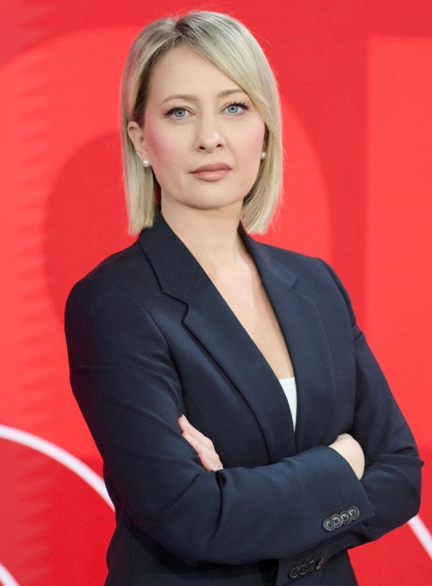
Sabina Tandara Knezović poznata je javna osoba i novinarka sa zapaženom ulogom u medijskom prostoru. Radi na RTL televiziji.
3.2.1.2.1.2.2. Slavko Tomin (1930.–2006.)
Supruga: Savka rođ. Vukobratović. Slavko Tomin živio je od 1930. do 2006. godine. Bio je oženjen i imao potomke. Podaci o vjerojatno živim članovima obitelji nalaze se u privatnom arhivu.
Šifre osoba: Savka Vukobratović (3.2.1.2.1.2.2-SP-1) | 3.2.1.2.1.2.2-S1 — Podaci o ovoj osobi su zaštićeni i dostupni samo odobrenim korisnicima privatnog arhiva.
3.2.1.2.1.2.3. Ante Tomin (1942.–2011.)
Supruga: Zlata rođ. Vučemil. Ante Tomin živio je od 1942. do 2011. godine. Bio je oženjen i imao potomke. Podaci o vjerojatno živim članovima obitelji nalaze se u privatnom arhivu.
Šifre osoba: Zlata Vučemil (3.2.1.2.1.2.3-SP-1) | 3.2.1.2.1.2.3.1 — Podaci o ovoj osobi su zaštićeni i dostupni samo odobrenim korisnicima privatnog arhiva.
3.2.1.2.1.2.3.1
Podaci o ovoj osobi su zaštićeni i dostupni samo odobrenim korisnicima privatnog arhiva.
Šifre osoba: 3.2.1.2.1.2.3.1-SP-1 — Podaci o ovoj osobi su zaštićeni i dostupni samo odobrenim korisnicima privatnog arhiva. | 3.2.1.2.1.2.3.1-S1 — Podaci o ovoj osobi su zaštićeni i dostupni samo odobrenim korisnicima privatnog arhiva. | 3.2.1.2.1.2.3.1-K1 — Podaci o ovoj osobi su zaštićeni i dostupni samo odobrenim korisnicima privatnog arhiva. | 3.2.1.2.1.2.3.1-K2 — Podaci o ovoj osobi su zaštićeni i dostupni samo odobrenim korisnicima privatnog arhiva.
3.2.1.2.1.2.4. Mate Tomin (1944.–2007.)
Supruga: Tonka rođ. Vukičević. Mate Tomin živio je od 1944. do 2007. godine. Bio je oženjen i imao potomke. Podaci o vjerojatno živim članovima obitelji nalaze se u privatnom arhivu.
Šifre osoba: Tonka Vukičević (3.2.1.2.1.2.4-SP-1) | 3.2.1.2.1.2.4.1 — Podaci o ovoj osobi su zaštićeni i dostupni samo odobrenim korisnicima privatnog arhiva.
3.2.1.2.1.2.4.1
Podaci o ovoj osobi su zaštićeni i dostupni samo odobrenim korisnicima privatnog arhiva.
Šifre osoba: 3.2.1.2.1.2.4.1-SP-1 — Podaci o ovoj osobi su zaštićeni i dostupni samo odobrenim korisnicima privatnog arhiva. | 3.2.1.2.1.2.4.1-S1 — Podaci o ovoj osobi su zaštićeni i dostupni samo odobrenim korisnicima privatnog arhiva. | 3.2.1.2.1.2.4.1-S2 — Podaci o ovoj osobi su zaštićeni i dostupni samo odobrenim korisnicima privatnog arhiva.
Interaktivni dijagram Antine grane
Otvorite pripadajući interaktivni rodoslovni dijagram ove obiteljske grane.
Napomena!
Kompletno rodoslovno stablo ove obiteljske grane nalazi se u desnom interaktivnom dijagramu na početnoj stranici Digitalnog arhiva roda Tandara.
Na početnoj stranici odaberite klikabilni okvir pod nazivom „Antina grana”. Klikom na taj okvir otvara se odgovarajući dio rodoslovnog stabla s potomcima ove grane.